Invito alla consapevolezza
Stanno proliferando su Facebook numerose pagine, spesso gestite da autori mai visti prima, con nomi generici, profili recenti o completamente impersonali, che pubblicano contenuti graficamente accattivanti e fortemente emotivi, a sostegno di una specifica parte del conflitto. Non si tratta di semplici opinioni personali, ma di vere e proprie narrazioni strategiche, ripetute con coerenza visiva e tematica, spesso con stile uniforme e ritmo cadenzato. Questo fenomeno non è casuale, né spontaneo: suggerisce l’esistenza di un coordinamento comunicativo, con obiettivi ben precisi. Tali contenuti, per quanto presentati come “spontanei”, circolano virali, compaiono nei feed anche di chi non li cerca. Non informano: orientano. Non aprono il dibattito: lo dirigono. In tempi di conflitto, le immagini parlano e lo fanno più in fretta delle parole.
Osservare, analizzare e decostruire i messaggi propagandistici non significa prendere posizione contro un popolo o una nazione, ma allenare lo sguardo critico a distinguere tra informazione e manipolazione, tra realtà e costruzione narrativa.
In questi giorni, i social network sono invasi da post dal forte impatto emotivo, visivo e simbolico, a sostegno di una delle parti in conflitto. Contenuti che bucano l’algoritmo, che compaiono senza che li si cerchi, che vengono spinti da campagne ben organizzate e finanziate. Questo dato, da solo, è indicativo: la propaganda è un campo di battaglia, tanto reale quanto quello militare. È allora lecito domandarsi: perché vediamo solo una parte della propaganda?
Come mai quella “nemica”, o semplicemente diversa, non ottiene la stessa visibilità? Forse esiste, ma non circola con la stessa forza, non è tradotta, sponsorizzata, amplificata con la medesima potenza tecnologica, diplomatica, mediatica.
Non potendole comparare direttamente, ci limitiamo a ciò che abbiamo sotto gli occhi. Se ciò che abbiamo davanti è una macchina narrativa potente, che lavora su più registri (emotivo, simbolico, estetico, ideologico), allora vale la pena interrogarla, smontarla, leggerla a fondo.
Non per schierarsi, ma per non essere schierati a nostra insaputa.
GUARDARE OLTRE L’IMMAGINE: UN ESERCIZIO DI LETTURA CRITICA DELLA PROPAGANDA VISIVA
Nel presente contributo si propone un’analisi di una selezione di immagini diffuse massivamente sui social network nel contesto dei conflitti in cui è attualmente coinvolto lo Stato di Israele. In particolare, il materiale iconografico esaminato si articola attorno a due assi narrativi principali: da un lato, la guerra in corso nella Striscia di Gaza e le tensioni storiche con il popolo palestinese; dall’altro, la crescente ostilità con l’Iran e la costruzione retorica di un nemico esterno esistenziale. Entrambe le narrazioni convergono in una strategia comunicativa che fa ampio uso di simboli, stereotipi e codici emozionali, orientata a polarizzare l’opinione pubblica internazionale. Le immagini analizzate, spesso pubblicate da pagine anonime o semi-istituzionali, non si limitano a trasmettere informazioni o a sollecitare empatia, ma operano su un livello più profondo: interpellano l’inconscio collettivo, attivano emozioni primarie, semplificano la complessità storica e moralizzano il conflitto in atto. L’obiettivo dell’analisi non è quello di confutare specifiche posizioni né di prendere parte attiva alle ostilità in corso, bensì di esercitare uno sguardo critico e psicologico capace di interrogare le forme della narrazione visiva: come e perché determinati messaggi vengono trasmessi in quel modo, con quei simboli ed in quel momento. L’approccio adottato integra prospettive psicodinamiche e cognitive, con riferimento ai contributi di Robert Jay Lifton (1961), Albert Bandura (2017), Susan Sontag (2021), Erving Goffman (1974) e Noam Chomsky (2008). Ogni immagine è interpretata come un artefatto comunicativo e simbolico, non per verificarne la veridicità, ma per ricostruire i meccanismi attraverso cui essa costruisce la realtà, tra emozione e ideologia, tra estetica e potere.
Nota metodologica
La scelta iniziale di concentrarsi sul materiale visivo pro-Israele non riflette una posizione ideologica, ma risponde a un dato empirico: tali immagini risultano ampiamente disponibili e diffuse sui social media, spesso visibili anche senza una ricerca attiva. Al contrario, la propaganda visiva pro-Palestina o anti-Israele circola con minore intensità nei canali mainstream e, nella maggior parte dei casi, deve essere attivamente ricercata al di fuori delle piattaforme più comuni. Questo squilibrio nella visibilità ha orientato il punto di partenza dell’analisi, ma non ne ha limitato la portata.
La seconda parte del saggio ha infatti incluso anche immagini anti-Israele e pro-Palestina, allo scopo di evidenziare non solo le diverse strategie persuasive, ma anche la disparità di accesso, diffusione e impatto simbolico tra le varie forme di propaganda. Il metodo di analisi impiegato rimane valido per qualsiasi contesto geopolitico e per ogni tipologia di comunicazione propagandistica, con l’obiettivo di comprendere come si costruisce visivamente il consenso, si produce l’identificazione o la demonizzazione, e si orienta la percezione emotiva dello spettatore. Il fine non è stabilire chi abbia ragione, ma indagare i meccanismi attraverso cui le immagini influenzano il giudizio, il sentimento e la memoria collettiva.
1. IL SOPRAVVISSUTO E IL SOLDATO: LA “SACRALIZZAZIONE" DEL PRESENTE ATTRAVERSO IL TRAUMA
L’immagine ritrae un anziano sopravvissuto all’Olocausto, riconoscibile per il tipico pigiama a righe dei campi di concentramento e la stella gialla cucita sul petto, nell’atto di accarezzare o benedire la testa di un giovane soldato israeliano, in divisa dell’aeronautica militare (IDF). I due sono posizionati di fronte a un hangar su cui campeggia la scritta “NEVER AGAIN”, mentre sullo sfondo si distingue un caccia militare con la bandiera israeliana ben visibile. Si tratta di una composizione fortemente simbolica, in cui la disposizione dei corpi, la postura, i colori e la prospettiva costruiscono una narrazione visiva densa, emozionale e politicamente orientata.
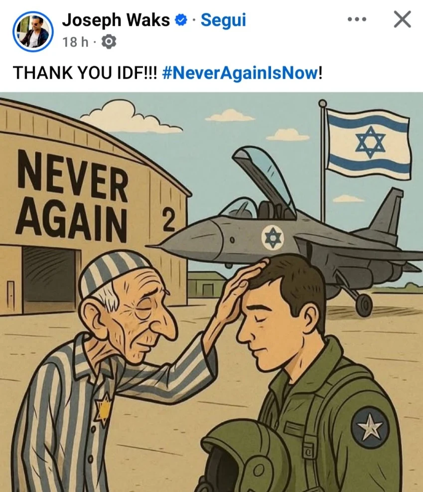
A livello psicologico e comunicativo, l’immagine attiva numerosi meccanismi persuasivi. In primo luogo, viene richiamato con forza il trauma dell’Olocausto, universalmente riconosciuto come paradigma del male assoluto nella coscienza occidentale. Il pathos associato a quella memoria viene riattivato ed investito su un soggetto del presente (il giovane soldato) attraverso un gesto che simula una trasmissione spirituale: dal testimone della persecuzione alla figura armata della difesa. Entrambi hanno gli occhi chiusi, e la mano dell’anziano poggiata sulla fronte del militare suggerisce un rito di passaggio simbolico. Il messaggio implicito è chiaro: “ciò che abbiamo subito legittima ciò che oggi facciamo per proteggerci”.
Questa traslazione emozionale produce un frame binario, netto: da una parte le vittime (gli ebrei perseguitati), dall’altra i loro naturali difensori (i militari israeliani). L’immagine non contempla complessità, ambivalenze, né interrogativi sul presente. Il passato funge da fondamento morale per la legittimità assoluta dell’azione odierna. In questo senso, lo slogan virale “#NeverAgainIsNow” lavora come espressione memetica imperativa (una formula virale e categorica): prende un’enunciazione universale (il “Mai più” riferito alla Shoah) e la reinterpreta come giustificazione di un intervento armato contemporaneo. Si tratta di una forma di rapimento emotivo (emotional hijacking): l’attivazione di memorie dolorose e valori condivisi viene usata per bypassare il ragionamento critico e produrre adesione immediata, senza possibilità di messa in discussione (Sontag, 2021).
La figura del sopravvissuto svolge qui un ruolo di autorità morale. Come suggerisce Cialdini (2006), nei meccanismi di persuasione, l’autorità (soprattutto se percepita come eticamente superiore) esercita una forte influenza sul comportamento e sul giudizio dell’osservatore. Il gesto dell’anziano non è neutro: funziona come una legittimazione rituale dell’uso della forza, una sorta di “unzione laica” attraverso cui il trauma diventa potere.
Dal punto di vista ideologico, si assiste alla costruzione di una “scienza sacra”, secondo la definizione di Robert Jay Lifton (1961), ovvero una narrazione che si fonda su una missione superiore e non ammette dissenso. L’IDF, in questa rappresentazione, non è solo esercito: è strumento di giustizia storica. In quanto tale, non può essere oggetto di critica senza che questa venga percepita come negazionismo o complicità morale con i carnefici del passato.
Il risultato è un’opera di propaganda raffinata, in cui la memoria del dolore viene piegata a una funzione giustificatoria. L’immagine, pur evocando empatia, sopprime ogni possibilità di immedesimazione con l’altro (chiunque sia il “nemico”), che scompare del tutto dallo scenario. L’unica alternativa alla militanza con l’IDF sembra essere, simbolicamente, l’antisemitismo. È un’operazione retorica che annulla ogni zona grigia e riduce il conflitto a una questione di sopravvivenza morale. In conclusione, questa rappresentazione visiva utilizza il trauma collettivo per sacralizzare il presente, investendo l’identità militare con un’aura di necessità e giustezza. È proprio tale aura, però, che rischia di inibire la riflessione critica e squalificare il dissenso come eresia etica.
Bibliografia
Bandura, A. (2017). Disimpegno morale: Come facciamo del male continuando a vivere bene. Centro Studi Erickson.
Cialdini, R. B. (2006). Le armi della persuasione. Come e perché si finisce col dire di sì (G. Lo Iacono, Trad.). Giunti.
Goffman, E. (1974). Frame analysis: An essay on the organization of experience. Harvard University Press.
Lifton, R. J. (1961). Thought reform and the psychology of totalism: A study of “brainwashing” in China. W. W. Norton & Company.
Sontag, S. (2021). Davanti al dolore degli altri. Nottetempo.
2. GRETA: L’INFANTILIZZAZIONE DELL’ATTIVISMO
In questa immagine, apparentemente serena e quasi giocosa, viene messa in scena una dinamica visiva fortemente simbolica.
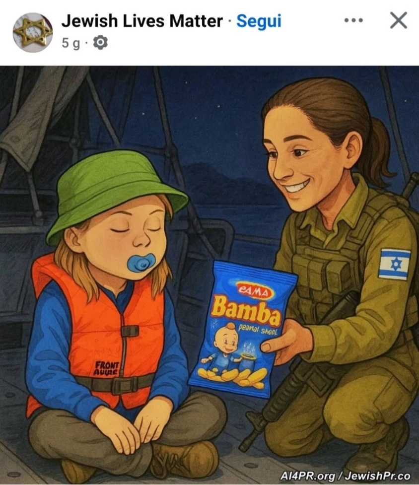
Da un lato compare una soldatessa israeliana armata, ma sorridente, seduta in modo rilassata mentre porge un pacchetto di snack (“Bamba”) ad una bambina bionda con ciuccio, giubbotto di salvataggio arancione e berretto verde.
La bambina ha gli occhi chiusi e le mani in grembo, in una postura composta, passiva, quasi beata. L’iscrizione sul giubbotto, “FRONT XXXX” (seconda parola non chiaramente leggibile), non corrisponde a nessuna sigla o nome reale noto. Potrebbe trattarsi di un riferimento fittizio o ironico alla spedizione attivista pro-palestinese (sostenuta anche da Greta Thunberg) volta a rompere simbolicamente il blocco navale su Gaza. La scritta sembra evocare genericamente l’idea di un “fronte attivista”, contribuendo al tono caricaturale e alla ridicolizzazione della missione. La sua presenza suggerisce un’operazione di semplificazione simbolica o di parodia delle iniziative umanitarie occidentali, inserendole in una cornice visiva infantilizzante e paternalista.
La scelta di rappresentare Thunberg, nota per il suo impegno ambientalista e pacifista, come una bambina silenziosa ed incapace, porta al centro della scena un potente dispositivo psicologico: l’infantilizzazione dell’avversario. Il messaggio non viene espresso a parole, ma costruito visivamente: l’attivismo occidentale è presentato come ingenuo, inconsapevole, persino ridicolo, una forma di protesta portata avanti da chi non comprende ciò che accade.
Come osserva Robert Jay Lifton (1961), la ridicolizzazione dell’altro è una forma di pressione psicologica che non mira a confutare un’argomentazione, ma a screditare la persona che la sostiene, rendendola oggetto di discredito pubblico. È un attacco che richiama la logica della “fallacia ad hominem” (Damer, 2008), mascherata da innocenza narrativa.
La scena si regge su un contrasto morale visivo: da un lato la fragilità infantile della bambina, dall’altro la rassicurante fermezza della soldatessa, che incarna la figura dell’adulto protettivo. Il militare è armato, ma le armi sono visivamente neutralizzate dalla postura e dal sorriso: la forza è presente ma nascosta, come un potere buono, che offre uno snack invece di imporsi con violenza. In questo gesto di cura si compie una raffinata operazione di soft power simbolico, in cui il cibo (in particolare lo snack tipico dell’infanzia israeliana) diventa veicolo di umanizzazione del potere militare. Come nel marketing politico, l’identità nazionale viene promossa attraverso la normalità e l’accoglienza (Chomsky & Herman, 2008).
La funzione dell’immagine non è quella di informare sul conflitto israelo-palestinese o sulla crisi a Gaza. Al contrario: il conflitto viene rimosso, le sue complessità azzerate, i palestinesi spariti. Resta solo una scena simbolica in cui Israele appare come uno Stato civile, ordinato, pacifico, mentre gli attivisti occidentali sono rappresentati come figure ingenue, disinformate o manipolate, incapaci di comprendere le dinamiche reali.
È un perfetto esempio di framing simbolico (Goffman, 1974), in cui il contesto visivo è costruito per orientare l’interpretazione morale in modo implicito. La vignetta non descrive, ma organizza l’esperienza dell’osservatore, guidandolo verso una lettura semplificata e univoca della realtà rappresentata.
A questo si aggiunge un framing effect (Tversky & Kahneman, 1981): la presentazione selettiva della scena modifica radicalmente la valutazione morale dei soggetti coinvolti. A rafforzare il meccanismo interviene un effetto alone (Kahneman, 2012), ovvero la tendenza a generalizzare una qualità positiva percepita (in questo caso, la calma e la gentilezza della soldatessa) all’intero contesto visivo. La compostezza, il sorriso ed il gesto materno della donna in uniforme funzionano come una “lente affettiva” che induce lo spettatore ad attribuire virtù morali anche all’istituzione militare ed alla nazione che rappresenta. In questo modo, la positività del singolo soggetto contamina emotivamente la percezione del conflitto, orientando il giudizio verso una visione rassicurante e apparentemente neutrale.
Il bersaglio della vignetta non è tanto Greta Thunberg in sé, quanto ciò che rappresenta: il pensiero critico, l’etica civile, la possibilità stessa di contestare un potere da una posizione umanitaria. La strategia visiva non attacca frontalmente la protesta, ma la ridicolizza simbolicamente, trasformando l’opposizione da pericolosa a patetica: non una minaccia quindi, ma un’inadeguatezza. È una delegittimazione morbida ma radicale, che svuota di senso la protesta, associandola ad un ciuccio e ad uno sguardo assente.
In sintesi, l’immagine ricorre ad una forma visiva di delegittimazione basata sulla tenerezza apparente, attraverso cui la guerra scompare ed il potere si fa carezza, mentre l’attivismo viene ridotto a capriccio infantile. Una propaganda sofisticata, che agisce normalizzando il potere armato e ridicolizzando il dissenso, senza mai nominare né il conflitto, né le sue vittime.
Bibliografia
Chomsky, N., & Herman, E. S. (2008). La fabbrica del consenso. La politica e i mass media. Milano: Il Saggiatore.
Damer, T. E. (2008). Attacking faulty reasoning (6th ed.). Wadsworth Publishing.
Goffman, E. (1974). Frame analysis: An essay on the organization of experience. Cambridge, MA: Harvard University Press.
Kahneman, D. (2012). Pensieri lenti e veloci. Milano: Arnoldo Mondadori Editore.
Lifton, R. J. (1961). Thought reform and the psychology of totalism: A study of “brainwashing” in China. New York: W. W. Norton & Company.
Tversky, A., & Kahneman, D. (1981). The framing of decisions and the psychology of choice. Science, 211(4481), 453–458. https://doi.org/10.1126/science.7455683
3. GRETA E LA DISUMANIZZAZIONE DELL'ATTIVISMO
La vignetta analizzata rappresenta due figure contrapposte: da un lato, un uomo con tratti mediorientali esasperati, vestito da miliziano, che trascina un sacco trasparente con la scritta “Israeli Babies” (bimbi israeliani), da cui fuoriescono arti insanguinati; dall'altro, una caricatura riconoscibile di Greta Thunberg, che regge un cartello con scritto “#FreePalestine” e grida: “How dare you... use plastic bags?? We need to save the world!” (“Come osi... usare sacchetti di plastica?? Dobbiamo salvare il mondo!”).
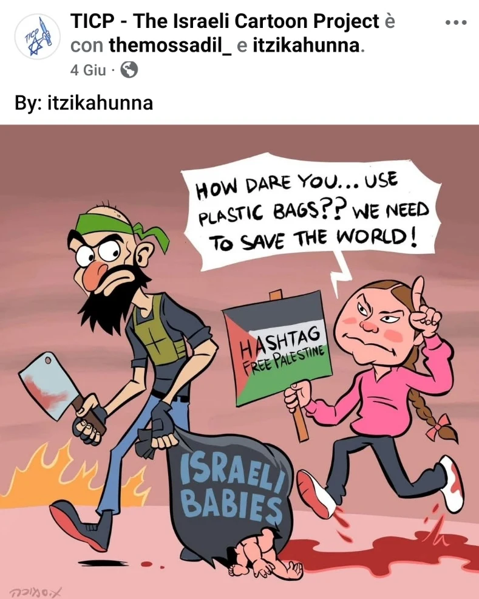
L'intera scena si fonda su uno stile caricaturale grottesco, funzionale alla costruzione di un messaggio polarizzante, fortemente accusatorio.
L'intento persuasivo ruota attorno all'accusa di ipocrisia selettiva, presentata attraverso una forma visiva di whataboutism, una forma visiva di contro-accusa retorica, tipica delle strategie manipolative che distolgono l’attenzione dal problema sollevato: l'immagine suggerisce che l’attivismo occidentale, rappresentato da Greta Thunberg, si indigna per cause ecologiche simboliche (l’uso della plastica), ma ignora crimini orrendi attribuiti ai nemici di Israele, come il presunto infanticidio. Questa logica manipolativa mira a screditare le battaglie ambientaliste e pro-palestinesi, esponendole come moralmente cieche, ingenue o addirittura complici.
La raffigurazione del miliziano palestinese segue la logica della “disumanizzazione bellica” (Lasswell, 1927): il volto, pur presente, è appiattito in un’espressione grottesca e priva di emozioni, ridotto ad una maschera ideologica. La fascia verde sulla fronte richiama simbolicamente Hamas e l’islamismo radicale, attivando nell’osservatore associazioni automatiche con il terrorismo jihadista. In questo modo, l’intera figura viene privata della sua soggettività, trasformata in un archetipo di barbarie, non più un essere umano, ma un mostro anonimo. Albert Bandura (2017), nel descrivere i meccanismi del disimpegno morale, sottolinea come la disumanizzazione dell’altro permetta di giustificare la violenza percependola come legittima: è più facile attaccare, punire o ignorare chi è già stato rappresentato come privo di umanità. In contrapposizione, Greta è ritratta come isterica e fuori contesto: grida slogan automatici, cieca rispetto all’orrore che la circonda, con il dito puntato verso l’alto, lontano dal sangue e dalla violenza in scena, come a sottolineare la sua disconnessione dalla realtà circostante e dai suoi drammi. Le sue scarpe, sporche di sangue, simboleggiano la colpa morale che le viene attribuita: quella di camminare, metaforicamente, sopra la sofferenza senza vederla. È un’immagine che costruisce un’accusa implicita ma pesantissima, nella quale l’attivismo pro-Palestina viene associato alla complicità con il crimine.
Dal punto di vista psicologico, l’immagine sfrutta meccanismi profondi. Attiva il disgusto e la paura (emotional hijacking – "rapimento emotivo"), bloccando ogni tentativo di riflessione razionale. Produce una dissonanza morale (Bandura, 2017), che spinge lo spettatore a dissociarsi dall’attivismo pacifista per timore di apparire complice. Il frame è rigido, binario, totalizzante: non esistono più sfumature tra resistenza civile, militanza armata, dissenso politico o attivismo ecologista. Tutto viene inglobato nella medesima colpa simbolica.
Il risultato è una strategia di propaganda sofisticata nella forma, brutale nel contenuto. Non invita al confronto, ma all’annientamento morale dell’avversario, utilizzando due figure pubbliche riconoscibili e antitetiche: il terrorista mostruoso e l’attivista ingenua, entrambi deformati al punto da perdere ogni contatto con la complessità reale. In questo modo, lo spettatore viene spinto a scegliere una parte senza poter comprendere il conflitto: non si informa, si schiera.
Bibliografia
Bandura, A. (2017). Disimpegno morale: Come facciamo del male continuando a vivere bene. Centro Studi Erickson.
Lasswell, H. D. (1927). Propaganda Technique in the World War. Knopf.
4. GRETA VERSO L’IRAN: L’IRONIA COME ARMA DI DELEGITTIMAZIONE
In questa immagine satirica, Greta Thunberg è rappresentata mentre pedala su una bicicletta con lo zaino in spalla e una bandiera iraniana fissata al manubrio. Sul fondo della scena, ambientata tra montagne e campagna, compare la scritta “I am on my way Iran” (Sto arrivando Iran), accompagnata dall’emoji della bandiera iraniana. Il post è stato pubblicato con una lunga sequenza di emoticon ridenti, rafforzando l’intento canzonatorio.
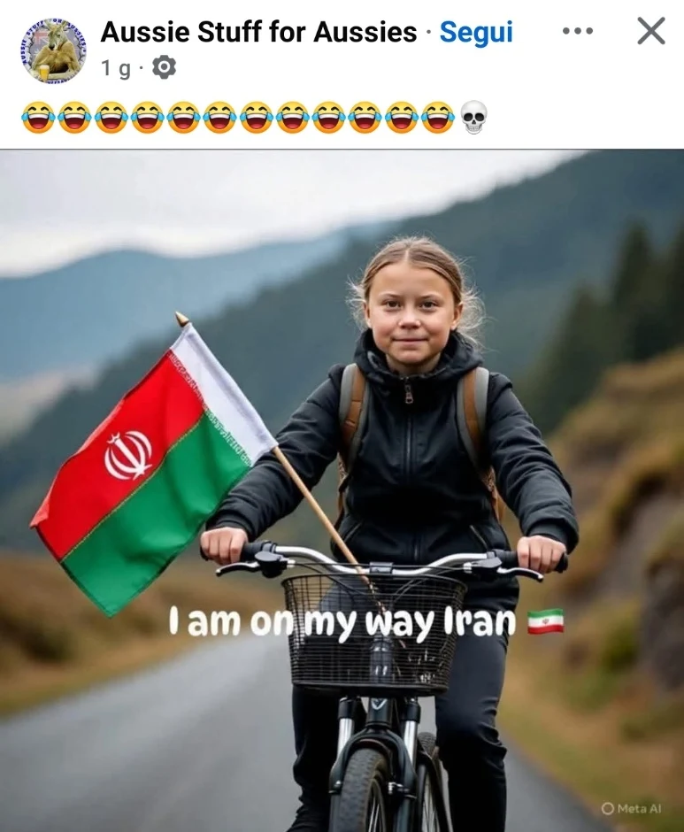
L’immagine ricontestualizza Greta nel nuovo asse narrativo legato all’Operazione Rising Lion, ovvero l’intervento militare israeliano contro l’Iran. Si passa così da una critica verso il suo attivismo pro-palestinese a una nuova linea retorica: Greta come figura naïve, illusa, quasi ridicola, ora addirittura schierata al fianco dell’Iran.
L’effetto comico è costruito su due livelli principali: da un lato l’iperbole – una ragazzina in bicicletta che sfida da sola uno scenario geopolitico altamente conflittuale – e dall’altro la falsa ingenuità – suggerire che Greta possa davvero recarsi in Iran a sostenere la causa, amplifica l’assurdità percepita. La figura dell’attivista climatica viene così svuotata del proprio messaggio originale e ridotta a veicolo di fraintendimento ideologico.
Il dispositivo retorico dominante è il ridicolo come forma di disattivazione del dissenso: si ride di Greta non per ciò che dice, ma per la sua presunta inadeguatezza rispetto alla complessità del mondo. Come spesso accade nei meccanismi di propaganda visiva, si costruisce una dissonanza performativa: l’azione pacifica dell’attivista (pedalare) è opposta allo scenario tragico della guerra, così da rendere il suo impegno etico un gesto fuori luogo.
Secondo Bandura (2017), questo tipo di narrazione produce un effetto di disimpegno morale: spostando l’attenzione sulla persona invece che sull’oggetto del discorso, si permette allo spettatore di dissociarsi emotivamente e cognitivamente dalle conseguenze reali delle azioni politiche. L’attacco non è diretto al contenuto della protesta, ma alla credibilità del soggetto che protesta. Questa strategia è ancora più efficace perché travestita da umorismo. La risata collettiva agisce come collante ideologico, normalizzando l’attacco e neutralizzando ogni empatia. Si ride insieme per non ascoltare. Greta, simbolo globale della disobbedienza civile, viene qui trasformata in mascotte grottesca di una parte percepita come nemica.
Bibliografia
Bandura, A. (2017). Disimpegno morale: Come facciamo del male continuando a vivere bene. Centro Studi Erickson.
5. RISING LION: LA POTENZA MITOLOGICA COME STRUMENTO DI LEGITTIMAZIONE BELLICA
L’immagine analizzata rappresenta un’enorme figura leonina, feroce ed in tensione, che stringe tra le fauci una bandiera israeliana. Attorno a lui si stagliano un soldato armato, un jet militare ed una nave da guerra. In alto, campeggia il titolo: “Operation Rising Lion”. La composizione ricorda un manifesto cinematografico o un poster di propaganda, evocando immediatamente un’estetica eroica e glorificatrice della guerra. Il riferimento implicito è all’operazione militare condotta da Israele contro l’Iran il 13 giugno 2025, nota come Am Kalavi (Leone che si Risveglia), un attacco coordinato contro obiettivi nucleari e militari iraniani.
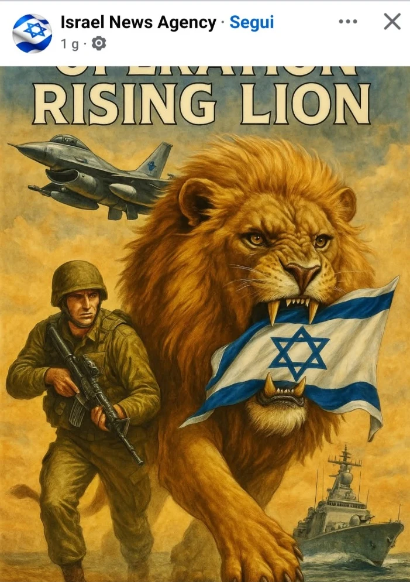
L’elemento centrale dell’immagine è il leone, animale totemico e simbolo secolare di forza, sovranità e diritto naturale al dominio. Qui, il leone non distrugge la bandiera: la custodisce. La tiene con le fauci (in modo delicato, ma perentorio) e lo sguardo fiero, trasformandosi in incarnazione della nazione stessa. Secondo la lettura freudiana della “totemizzazione” (Freud, 1921), il totem rappresenta il padre mitico, protettore e vendicatore della comunità: una figura sacralizzata che giustifica ogni azione, anche la violenza, in nome della sopravvivenza del gruppo. Il leone, in questo caso, incarna il principio stesso di Israele, difeso con forza animalesca, ancestrale, quasi divina.
Il nemico non è visibile: questa scelta non è neutra. L’assenza del volto avversario permette una proiezione mentale soggettiva, moltiplicando la potenza retorica dell’immagine. Chiunque minacci Israele, lo contesti o lo critichi può essere inserito, per analogia emotiva, nello spazio lasciato vuoto. È un meccanismo che ha radici profonde anche nella teoria psicoanalitica: già Freud, in Psicologia delle masse e analisi dell’Io (1921), osservava come i gruppi rafforzino la propria identità collettiva proiettando verso un nemico esterno le proprie paure, ambivalenze e pulsioni aggressive. Il nemico, in questa prospettiva, non è solo una minaccia concreta, ma una funzione psicologica necessaria: aiuta a creare coesione interna, rafforza il legame col leader o col simbolo totemico, canalizza verso l’esterno i conflitti interni. In questo senso, la rappresentazione visiva della minaccia, anche quando è assente, diventa uno strumento fondamentale per la costruzione dell’identità.
La forma visiva, mutuata dal linguaggio epico cinematografico, rafforza questo processo. La scena richiama i manifesti bellici della Seconda Guerra Mondiale o le copertine di videogiochi e film d’azione, dove l’ambiguità morale è eliminata, sostituita da una narrazione binaria: noi contro loro, forza contro male, ordine contro caos. Harold D. Lasswell (1927) aveva già descritto queste modalità nella propaganda bellica come strategie che mirano a suscitare coesione interna e semplificazione percettiva: il nemico è il male assoluto, e la nostra causa è giusta per definizione.
Non meno rilevante è la funzione del messaggio all’interno del gruppo: immagini come questa sono costruite per il consumo interno, per rafforzare lo spirito nazionale e militarista. Irving Janis (1972), nel suo studio sul groupthink, spiega come la glorificazione della forza e dell’unità possa soffocare il dissenso, promuovendo un conformismo emotivo che impedisce ogni analisi critica delle strategie adottate. Il leone, quindi, non è solo un simbolo esterno, ma una guida interna all’identità: si invita lo spettatore a riconoscersi nella sua furia ed a legittimare ogni azione come necessaria, inevitabile, giusta.
Una lettura più profonda evidenzia come l’immagine rifletta molte delle dinamiche tipiche del totalismo psicologico così come descritto da Robert Jay Lifton nel 1961. La figura del leone, per esempio, non è semplicemente un simbolo di forza, ma assume una funzione sacrale: è la rappresentazione visiva di una missione superiore, di un’epica che trasfigura l’azione militare in una lotta giusta per definizione (Sacred Science, Scienza Sacra). In questo contesto, l’uso di simboli forti e di un’estetica eroica non solo colpisce visivamente, ma plasma anche il linguaggio interiore dello spettatore, caricando ogni elemento di un significato emotivo assoluto: patria, forza, gloria diventano termini inscindibili (Loading the Language, Caricamento del Linguaggio). La persona, il cittadino, l’osservatore vengono progressivamente assorbiti in un’identità collettiva che non ammette deviazioni o dubbi, perché l’appartenenza nazionale, simboleggiata dal leone e dalla bandiera, prevale su ogni valutazione individuale (Doctrine Over Person, La Dottrina sopra la Persona). L’assenza del nemico dall’immagine, invece, non è una forma di neutralità, ma la manifestazione visiva di una negazione dell’esistenza dell’altro: non solo non c’è, ma non ha diritto di essere rappresentato (Dispensing of Existence, Dispensazione dell’Esistenza). Infine, la costruzione stessa della scena, con il titolo epico e l’enfasi mitologica sul “risveglio”, rientra nella manipolazione mistica (Mystical Manipulation, Manipolazione Mistica): ciò che è accaduto o sta per accadere non viene giustificato in termini politici o razionali, ma come parte di un destino più grande, di una necessità trascendente e collettiva.
La contro-lettura psicologica evidenzia come questo tipo di comunicazione annulli la complessità geopolitica ed umana. Non ci sono civili, non ci sono conseguenze, non c’è diplomazia: solo il mito della potenza. La guerra viene depoliticizzata e trasformata in epopea visiva. Ed è proprio questo il punto: quando la violenza diventa narrazione mitica, perde il suo carattere problematico e si fa religione secolare.
Bibliografia
Freud, S. (1921). Psicologia delle masse e analisi dell’Io.
Janis, I. L. (1972). Victims of groupthink: A psychological study of foreign-policy decisions and fiascoes. Boston, MA: Houghton Mifflin.
Lasswell, H. D. (1927). Propaganda Technique in the World War. Knopf.
Lifton, R. J. (1961). Thought reform and the psychology of totalism: A study of “brainwashing” in China. New York: W. W. Norton & Company
6. IDF ANGELS: IL VOLTO GIOVANE E FEMMINILE DEL SOFT-POWER MILITARE
L’immagine mostra quattro giovani soldatesse israeliane sedute su un’altalena nel deserto, abbracciate tra loro e sorridenti. Una di loro ha un fucile d’assalto, che però non è enfatizzato visivamente.
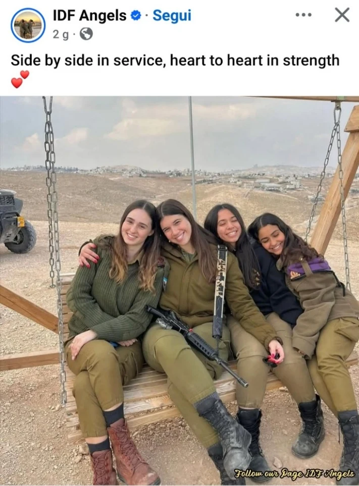
Sullo sfondo si intravedono insediamenti (Cisgiordania?).
Il testo, in stile affettuoso e motivazionale, recita: “Side by side in service, heart to heart in strength” (Fianco a fianco nel servizio, cuore a cuore nella forza), accompagnato dalla firma virale della pagina: “Follow our Page IDF Angels” (Segui la nostra pagina IDF Angels).
La strategia visiva opera una potente estetizzazione del conflitto: la guerra non è mostrata come trauma o distruzione, ma come esperienza di amicizia, bellezza e complicità. Il volto della militarizzazione viene truccato, reso sorridente, empatico, femminile. La presenza del fucile viene neutralizzata, resa quasi accessoria, ed il paesaggio desertico funge da sfondo neutro che non lascia spazio ad una riflessione politica o storica.
La costruzione della scena è pensata per generare una dissonanza cognitiva attentamente calibrata: lo spettatore è posto davanti ad un’immagine emotivamente piacevole ma razionalmente dissonante. Il sorriso, il legame tra le ragazze, il tono emotivo del testo coesistono con un contesto armato ed un luogo di occupazione. Questo contrasto viene risolto attraverso il soft-power dell’identificazione: le soldatesse appaiono come sorelle, amiche, figure familiari con cui entrare in sintonia, non come agenti armati di uno stato in guerra. Come ha osservato Festinger (1957) nella sua teoria della dissonanza cognitiva, l’essere umano tende a ridurre l’incoerenza tra emozioni e cognizioni, trovando un equilibrio rassicurante anche in contesti eticamente ambigui. In questo modo, il nazionalismo viene interiorizzato per via affettiva. Non viene proclamato, ma incarnato da volti giovani, puliti, rassicuranti. È ciò che Chomsky e Herman (2008) descrivono come “fabbricazione del consenso”: un consenso che non passa dalla razionalità o dalla riflessione, ma dalla costruzione di un’immagine positiva, desiderabile, virale. Analogamente, Sontag (2021), nel suo saggio Davanti al dolore degli altri, osservava come le immagini fotogeniche possano disarmare il giudizio morale, sostituendo alla comprensione il desiderio di accettazione ed appartenenza. In questo senso, l'immagine delle IDF Angels non mostra il conflitto, lo rimuove. Lo sfondo è privo di tensione o presenza “nemica”. Non c’è opposizione, solo armonia. È una rappresentazione dove la militarizzazione diventa paesaggio, dove l’esercito si fa “marchio di affetto”, grazie anche alla femminilizzazione della forza ed all’uso dell’amicizia come veicolo di consenso.
7. BEAUTIFUL SOLDIER: L’IDENTIFICAZIONE COME LEVA PERSUASIVA
La seconda immagine raffigura una giovane donna in divisa, con il volto camuffato da vernice verde, che guarda in camera ed indica direttamente lo spettatore, riprendendo il celebre gesto dello “Zio Sam”. Il testo recita: “Do you stand with my Jewish state? Do you stand with my great nation” (Sei dalla parte del mio Stato ebraico? Sei dalla parte della mia grande nazione). È un’interpellazione diretta, affettiva, apparentemente semplice, che richiama lo spettatore a una presa di posizione.
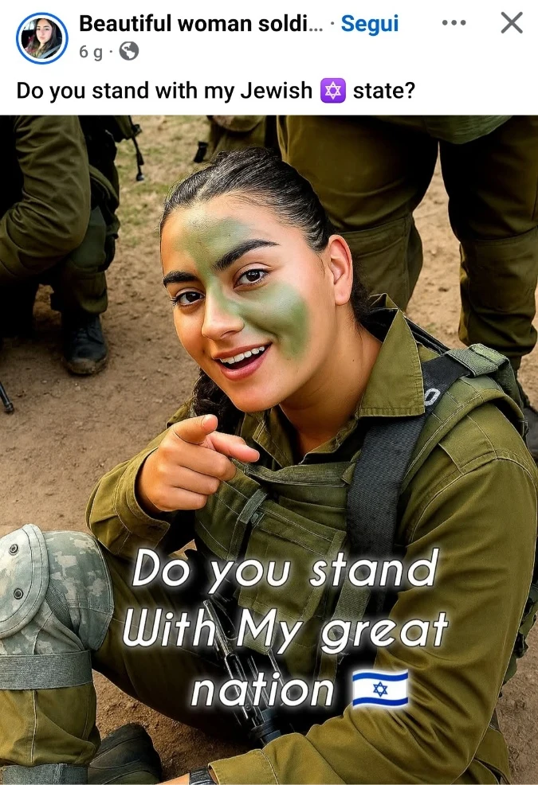
In questo caso, la strategia è quella dell’identificazione emozionale. Non ci sono riferimenti alla guerra, né immagini di violenza o di conflitto: la narrazione è costruita intorno al volto, al sorriso, alla familiarità. È una forma di soft-power che, come suggerisce Albert Bandura (2017), agisce attraverso il principio del disimpegno morale: non si mostra ciò che accade nel conflitto, ma chi lo rappresenta. L’identificazione con il volto bello e fiero della giovane soldatessa diventa strumento di legittimazione.
Il messaggio lavora anche sul piano simbolico: si parla di “Jewish state” (Stato ebraico) e si utilizza la Stella di Davide, alludendo ad una comunanza etnica e religiosa che trascende il piano politico. In questo modo, la domanda non è più solo “sostieni Israele?”, ma “sostieni il mio popolo?”, attivando una dinamica morale ed identitaria che tende a semplificare ogni complessità geopolitica. La retorica si sposta così dal piano dei fatti a quello dell’affetto, dall’argomentazione al riconoscimento.
Cialdini (2012) parla di effetto di coerenza e simpatia: se chi guarda simpatizza per la giovane donna, o si riconosce nei valori impliciti della sua missione, sarà più propenso a rispondere mentalmente “sì”, e quindi ad aderire emotivamente ad una narrazione che non viene mai contestualizzata, ma solo proposta come degna di fiducia.
In entrambe le immagini, il punto non è mostrare la guerra. È produrre consenso attraverso l’estetica, la somiglianza, la simpatia, la giovinezza.
La bellezza delle immagini serve a far dimenticare la brutalità del contesto.
Bibliografia
Bandura, A. (2017). Disimpegno morale: Come facciamo del male continuando a vivere bene. Centro Studi Erickson.
Chomsky, N., & Herman, E. S. (2008). La fabbrica del consenso. La politica e i mass media. Il Saggiatore.
Cialdini, R. B. (2006). Le armi della persuasione. Come e perché si finisce col dire di sì (G. Lo Iacono, Trad.). Giunti.
Festinger, L. (1957). A theory of cognitive dissonance. Stanford University Press.
Sontag, S. (2021). Davanti al dolore degli altri. Nottetempo.
8. “THIS IS OUR LAND!”: IL GASLIGHTING GEOPOLITICO DEL MEME LUNARE
L’immagine raffigura un personaggio identificabile come palestinese, inserito nella celebre scena dello sbarco sulla Luna accanto all’astronauta americano. Il personaggio regge una bandiera palestinese e pronuncia la frase “This is our land!” (Questa è la nostra terra!), in netto contrasto con il contesto lunare surreale.
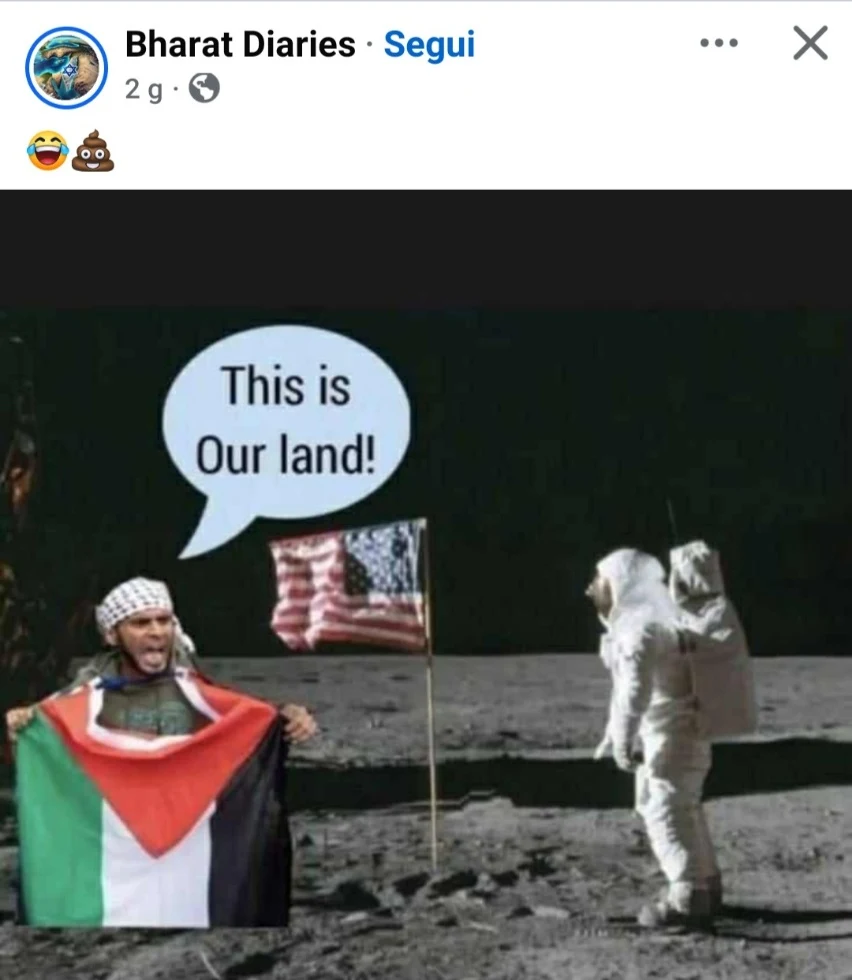
Il post è accompagnato da una sequenza di emoji derisorie, tra cui faccine ridenti e un’emoji fecale (😂💩), che rafforzano l’intento umoristico e lo scherno offensivo implicito.
La scelta del contesto è cruciale. La Luna è un simbolo universale di conquista ed irraggiungibilità, associato all’impresa storica dell’esplorazione spaziale. Inserire in questo scenario un personaggio che rivendica quella terra come propria è una strategia retorica che mira a ridicolizzare qualsiasi rivendicazione territoriale, nello specifico quella palestinese. Il risultato è una caricatura visiva che trasforma una questione storica e politica in un paradosso comico: “rivendicare la Palestina è assurdo quanto dire che la Luna è nostra”.
Questo meccanismo si avvicina a ciò che può essere definito “gaslighting geopolitico” (negazione sistematica della realtà altrui in ambito politico): si nega la legittimità di una rivendicazione storica non con argomenti, ma con una rappresentazione talmente inverosimile da indurre il pubblico a dubitare della serietà di chi la esprime. È una forma di svalutazione simbolica che priva l’altro della possibilità di essere creduto, ancor prima che ascoltato.
La presenza delle emoji accentua il carattere derisorio e disumanizzante del messaggio. L’emoji della risata veicola un giudizio implicito di assurdità, mentre quella delle feci suggerisce che la rivendicazione palestinese sia non solo sbagliata, ma ripugnante. Si tratta di una semantica visiva elementare ma potente, che opera una spersonalizzazione dell’avversario attraverso codici emotivi universali.
Questa rappresentazione si inserisce in una più ampia strategia comunicativa nota come influential inoculation (inoculazione influente): un tipo di prevenzione simbolica che discredita preventivamente la narrativa dell’avversario, facendola apparire ridicola o indegna di attenzione. È la stessa logica che alimenta l’etichetta “Pallywood” (termine coniato per descrivere le presunte messinscene palestinesi), e che ha lo scopo di minare la credibilità delle testimonianze o delle immagini provenienti dai territori occupati.
Il frame cognitivo imposto è anch’esso manipolativo: chi ride del meme è dalla parte della ragione; chi lo contesta è troppo serio, privo di ironia o peggio, complice di una narrazione falsa. La polarizzazione è netta, e la possibilità di discutere seriamente dei diritti o della storia viene annullata.
Come osservano Chomsky e Herman (2008), una delle funzioni della propaganda moderna è proprio quella di distogliere il pensiero critico e sostituirlo con reazioni emotive immediate. Qui, l’umorismo non è un mezzo per alleggerire o riflettere, ma per zittire e delegittimare. La battuta visiva diventa un’arma, e la risata, un atto politico di negazione.
Bibliografia
Chomsky, N., & Herman, E. S. (2008). La fabbrica del consenso. La politica e i mass media. Il Saggiatore.
9. BERSAGLI CIVILI: LA COSTRUZIONE DI UN NEMICO ASSOLUTO
L’immagine mostra un cielo notturno attraversato da scie luminose (razzi o sistemi di difesa antimissile) che si stagliano sopra una città illuminata, verosimilmente Tel Aviv.
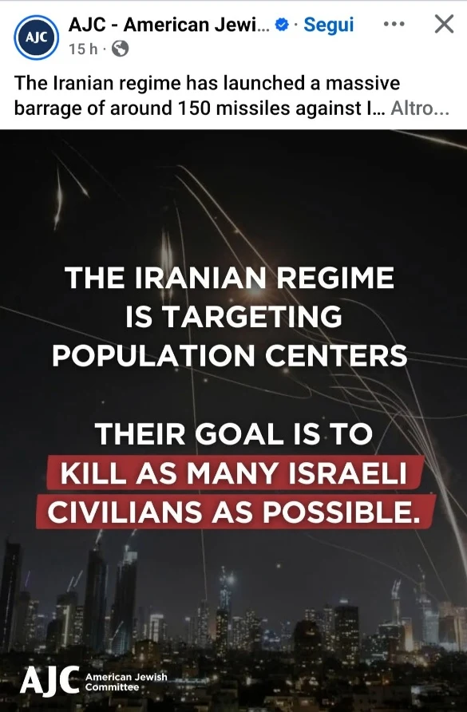
Il testo sovrapposto recita: “The Iranian regime is targeting population centers. Their goal is to kill as many Israeli civilians as possible” (“Il regime iraniano sta colpendo i centri abitati. Il loro obiettivo è uccidere quanti più civili israeliani possibile”). La composizione visiva e verbale non lascia spazio all’ambiguità: siamo di fronte ad un messaggio emotivamente carico, in cui ogni elemento è calibrato per suscitare una reazione viscerale. Il linguaggio scelto non utilizza espressioni neutre come “attacco”, ma parla esplicitamente di un regime che prende di mira i centri abitati, con un massiccio bombardamento di circa 150 missili.
Questo tipo di formulazione è un classico esempio di demonizzazione dell’avversario: non si tratta di una nazione, né di un esercito, ma di un’entità totalitaria, crudele, che agisce deliberatamente con l’intento di colpire civili innocenti.
Si tratta di una costruzione propagandistica del nemico assoluto, un processo ampiamente studiato da Lifton (1961), secondo cui la disumanizzazione dell’avversario è funzionale alla creazione di una narrazione moralmente binaria: noi come vittime legittime, loro come male assoluto. Questa dinamica si ritrova nella settima tecnica manipolativa descritta dallo stesso Lifton nel contesto del totalitarismo psicologico: la dispensazione dell’esistenza (dispensing of existence). Secondo questa logica, il diritto stesso di esistere viene riservato soltanto a coloro che aderiscono alla verità ufficiale del gruppo dominante. Chi ne è escluso (sia per opinioni, appartenenza o identità) non solo è considerato in errore, ma è ritenuto indegno di esistere in quanto tale.
Applicata alla comunicazione bellica, questa tecnica porta ad una rimozione simbolica dell’umanità del nemico: l’altro viene ridotto a entità amorfa e pericolosa, una minaccia esistenziale la cui distruzione non è solo legittima, ma moralmente giusta. Non c’è spazio per l’ambiguità, per la complessità, per la storia dell’altro: ciò che resta è una costruzione assoluta e definitiva della colpa.
Nel caso specifico della propaganda che attribuisce all’“Iranian regime” l’intenzione deliberata di “uccidere il maggior numero possibile di civili israeliani”, questa narrazione trasforma il conflitto in un piano di sterminio unidirezionale. L’Iran non è presentato come uno Stato con motivazioni geopolitiche, militari o ideologiche, ma come una forza oscura, animata esclusivamente dal desiderio di annientamento. In questo modo, si disattiva ogni possibilità di comprensione e si autorizza qualunque risposta, anche la più estrema, come necessaria autodifesa. Come Lifton osservava, la vera efficacia di questo meccanismo non sta tanto nell’odio diretto, quanto nella negazione dell’identità altrui, nella cancellazione del volto e della voce dell’altro. Ed è proprio attraverso questo processo psicologico che la propaganda trasforma l’informazione in missione morale, l’autodifesa in dovere, e il dissenso in tradimento.
L’efficacia retorica del messaggio è amplificata dalla grafica selettiva: la parte finale della frase, “TO KILL AS MANY ISRAELI CIVILIANS AS POSSIBLE” (“uccidere quanti più civili israeliani possibile”), è scritta in maiuscolo (è “urlato”) ed evidenziata di rosso. È una tecnica di attivazione emotiva visiva, pensata per catturare immediatamente l’attenzione e suscitare sentimenti di paura, rabbia, identificazione. In termini psicologici, potremmo parlare di un emotional hijacking (rapimento emotivo), un meccanismo che impedisce l’elaborazione razionale del contenuto a favore di una risposta automatica di tipo reattivo e difensivo.
Il messaggio non offre alcuna contestualizzazione del conflitto. Non vi è alcun riferimento alle dinamiche geopolitiche, alle motivazioni, alla storia del confronto tra Israele e Iran. La narrazione si basa su una semplificazione estrema: loro attaccano i nostri civili e noi dobbiamo difenderci. È un framing cognitivo totale, in cui l’unica possibilità concessa è quella della reazione legittima. Secondo Rosengren (2001), l’influenza dei media non si limita a determinare di cosa il pubblico debba occuparsi, ma incide profondamente anche sul come i contenuti vengono recepiti, interpretati e giudicati. Attraverso l’agenda setting (selezione della notizia), l’enfasi e la ripetizione, il messaggio mediale orienta la cornice cognitiva (framing) e definisce ciò che diventa rilevante all’interno del discorso pubblico, strutturando in modo implicito le modalità del pensiero e della valutazione.
L’espressione “Iranian regime” (regime iraniano) contribuisce inoltre a rafforzare l’immagine di un avversario compatto e minaccioso, eliminando ogni riferimento a dissenso interno, pluralismo politico o visioni alternative. Si tratta di un’operazione semantica che annulla la complessità e riduce l’identità collettiva dell’altro ad un unico volto: quello del nemico.
Secondo Albert Bandura (2017), queste strategie rientrano nei meccanismi di disimpegno morale: enfatizzare la minaccia dell’altro permette di sospendere i freni etici e giustificare qualunque azione di risposta, anche estrema, come necessaria alla sopravvivenza. In questo contesto, ogni forma di dissenso interno rischia di essere percepita come tradimento o ingenuità, perché l’unica narrazione possibile è quella della difesa eroica contro un attacco genocida.
In definitiva, il messaggio non ha scopo informativo, ma performativo. Non chiede di comprendere, ma di reagire. Sfrutta l’urgenza e l’indignazione per inibire il pensiero critico e rinforzare un’identità collettiva basata sull’assedio e sulla minaccia esistenziale.
Bibliografia
Bandura, A. (2017). Disimpegno morale: Come facciamo del male continuando a vivere bene. Trento: Centro Studi Erickson.
Lifton, R. J. (1961). Thought reform and the psychology of totalism: A study of “brainwashing” in China. W. W. Norton & Company.
Rosengren, K. E. (2001). Introduzione allo studio della comunicazione. Bologna: Il Mulino.
10. “STAND WITH US”: L’ESTETICA DELLA NORMALITÀ COME SOFT PROPAGANDA
L’immagine raffigura un viale urbano ordinato e moderno, decorato in modo sistematico con bandiere israeliane: issate sui tronchi delle palme, replicate lungo tutto il percorso, ed incorniciate da cartelloni coerenti con la stessa simbologia nazionale. Il post è accompagnato dalla frase “Stand with us” (Stai con noi) seguita da cuori blu e bandiere israeliane, in un tono affettuoso, positivo, apparentemente privo di tensione politica. Proprio questa apparente neutralità ne costituisce il cuore propagandistico.
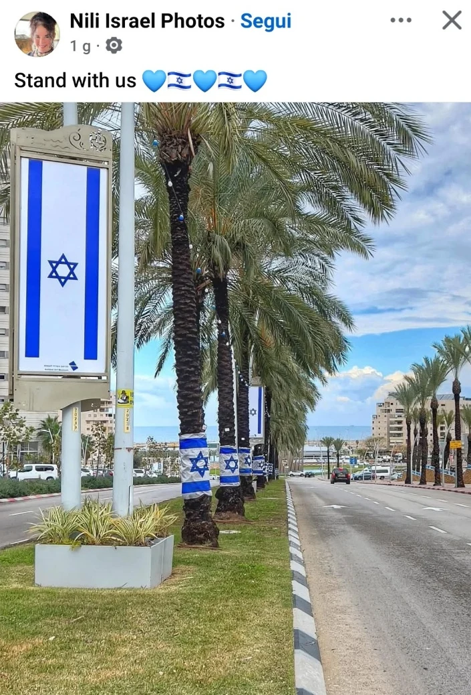
La ripetizione ordinata dei simboli nazionali crea un effetto scenico che comunica coesione, unità, stabilità.
È una narrazione per immagini, in cui l’identità di Israele viene rappresentata come un dato visivo naturale, armonioso, esteticamente desiderabile. Il paesaggio è pulito, moderno, privo di conflitto: una società ordinata, accogliente, pacifica. Chi potrebbe non voler “stare con loro”? L’identificazione visiva si fa strumento retorico: l’adesione alla nazione viene veicolata non attraverso il ragionamento, ma tramite l’apprezzamento estetico.
Questa estetizzazione dell’identità funziona attraverso un framing culturale ed affettivo. La ripetizione delle bandiere costruisce una cornice cognitiva secondo cui Israele coincide con l’idea di civiltà moderna ed armonica. Non serve nominare il conflitto o l’altro: l’assenza di Palestina, soldati o tensione è già di per sé un messaggio politico. È una forma di esclusione implicita: ciò che non appare, non esiste. Se “noi” siamo ordine, luce e bandiere, tutto ciò che è disordine, conflitto o critica, resta fuori da questa immagine.
Questo tipo di comunicazione si inscrive perfettamente in ciò che Ellul (1962/2023) definiva propaganda bianca (white propaganda): una strategia che non ha bisogno di mentire, perché lavora accumulando simboli, immagini, emozioni fino a rendere naturale l’adesione al messaggio. L’effetto finale è una normalizzazione affettiva del potere. Come osserva Bauman (2011), ciò che appare bello e normale smette di essere oggetto di interrogazione critica: viene accettato, amato, difeso perché è già integrato nel nostro immaginario emotivo.
Anche il lavoro di Anderson (2006) sul concetto di comunità immaginate risulta particolarmente pertinente: la nazione non è un fatto oggettivo, ma una costruzione simbolica che si rafforza attraverso la visibilità condivisa di simboli, bandiere, colori. Più questi elementi si ripetono nello spazio pubblico, più diventano prova tangibile dell’esistenza e della legittimità della nazione stessa.
L’immagine non offre alcuna informazione né propone un argomento. Non parla di storia, di politica, né di conflitto. Eppure costruisce una narrazione affettiva ed estetica in cui l’unica opzione possibile è “stare con noi”. È una forma di egemonia visiva: non ti chiede se sei d’accordo, ti mostra semplicemente come dovrebbe essere il mondo.
In questo modo, la propaganda diventa più efficace: non cerca di convincere con argomentazioni, ma modella silenziosamente ciò che va desiderato, sostenuto, amato. Se non stai con questa immagine, se non ti emoziona, allora forse sei tu a non appartenere a questo ordine simbolico.
Non tutte le immagini parlano forte. Alcune costruiscono silenziosamente ciò che devi pensare, amare, difendere. Quando la propaganda è più efficace? Quando non la riconosci come tale.
Bibliografia
Anderson, B. (2006). Comunità immaginate. Origini e diffusione dei nazionalismi. Roma: Manifestolibri.
Bauman, Z. (2011). Modernità liquida. Bari: Laterza.
Ellul, J. (2023). Propaganda. Piano B Edizioni. (Opera originale pubblicata nel 1962)
11. RUN! – LA CARICATURA, IL NEMICO RIDICOLIZZATO
L’immagine, pubblicata dal progetto satirico The Israeli Cartoon Project e firmata da Ronny Gordon, mostra un personaggio mostruoso in fuga, inseguito da un missile. Il soggetto indossa abiti tradizionali riconducibili all’Iran religioso (forse un riferimento ad una figura come Khamenei), ma si distingue anche per un dettaglio incongruo: una scarpa col tacco femminile. La scritta in alto, “RUN!” (“Corri!”), completa l’intento satirico. L’intera scena è costruita per provocare una reazione viscerale nello spettatore: riso, scherno, superiorità morale.
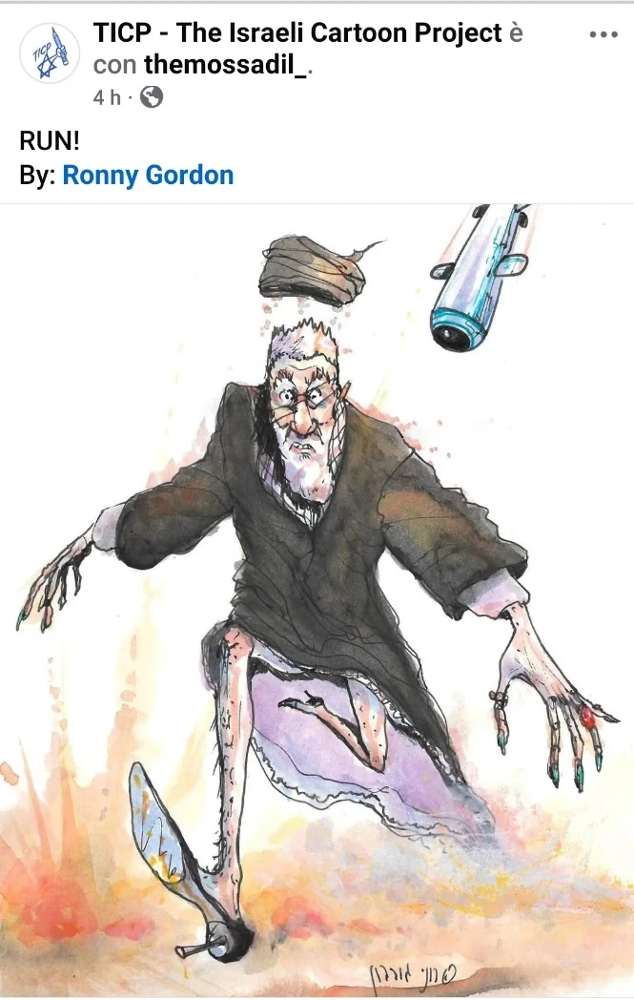
La prima tecnica evidente è quella della disumanizzazione per caricatura. Il personaggio ha mani scheletriche, unghie lunghe, lineamenti grotteschi: non si presenta come un avversario umano, ma come una creatura mostruosa, simile ad una strega o a un demone.
Questo tipo di rappresentazione opera una deumanizzazione radicale, che priva l’individuo della sua identità e lo riduce ad un simbolo del male assoluto. Come descritto da Lifton (1961), la disumanizzazione è un elemento centrale nelle forme di propaganda totalizzante, in cui il nemico non è soltanto da combattere, ma da sradicare moralmente e simbolicamente.
Un secondo livello riguarda la femminilizzazione umiliante. Il dettaglio della scarpa col tacco introduce un elemento di derisione di genere: la femminilità, qui, non è celebrata ma usata come strumento di umiliazione. Viene accostata all’idea di fragilità, goffaggine e inadeguatezza, traslata sul corpo maschile di un leader nemico. Questo meccanismo si basa su stereotipi culturali fortemente radicati, che identificano l’autorità maschile come incompatibile con i codici estetici femminili, rendendo il travestimento (anche solo simbolico) una forma di derisione. Non è solo il corpo ad essere ridicolizzato, ma anche il potere che rappresenta, svuotato della sua forza simbolica.
Tuttavia, la presenza della scarpa col tacco potrebbe contenere un significato ulteriore, più sottile e stratificato. A partire dal 2022, con la morte di Mahsa Amini, l’Iran è stato attraversato da un’ondata di proteste, guidate in gran parte da donne e ragazze che si sono ribellate alle imposizioni del regime. L’abbigliamento femminile (ad esempio il velo) è diventato un campo di battaglia politico. In questo senso, il tacco può evocare inconsciamente quel fronte di resistenza, ma lo fa in modo ambiguo: il leader iraniano, costretto ad indossarlo, non viene rappresentato come travolto da una rivoluzione legittima, bensì come ridicolizzato da ciò che ha cercato di reprimere. È una strumentalizzazione indiretta della lotta femminile, che rimuove la dignità del gesto di protesta e lo reinserisce in una narrazione volta a disprezzare il nemico. Anche l’oggetto della ribellione (in questo caso, un simbolo femminile) viene riassorbito nel circuito della propaganda.
Un altro elemento cruciale è il tono slapstick della scena. Il missile non incute terrore: è rappresentato come parte di una gag. Il nemico, in fuga, non suscita paura ma riso. Il termine slapstick si riferisce ad una forma di comicità farsesca, basata su azioni esagerate e goffe, tipica delle comiche del cinema muto, in cui il corpo diventa oggetto di derisione attraverso cadute, inseguimenti ridicoli o botte simulate. In questo caso, la tragedia della guerra viene trasfigurata in una rappresentazione grottesca e ridicola: il bombardamento diventa uno sketch, e la fuga del nemico un momento da cartone animato. Questa trasformazione ha un effetto anestetico sul pubblico: sdrammatizza la violenza e la trasforma in intrattenimento, neutralizzando la possibilità di provare empatia per chi subisce l’attacco. È ciò che Sontag (2021) definiva come “anestesia morale”: la trasformazione del dolore o della violenza in spettacolo, che neutralizza la possibilità di provare empatia. Attraverso l’umorismo, anche l’aggressione assume i tratti di una farsa accettabile, perfino desiderabile.
Infine, la “perdita di faccia” rappresentata nell’immagine si inserisce nella ritualizzazione descritta da Goffman (1955), per cui l’umiliazione pubblica è una forma di controllo sociale. Trasformare il nemico in un buffone, in qualcuno da ridere e non da temere, significa ridurlo sul piano simbolico prima ancora che su quello militare.
Nel complesso, questa vignetta non si limita a far ridere: si inserisce in un sistema comunicativo volto a disumanizzare, ridicolizzare e disattivare ogni possibile empatia verso il nemico, legittimando la sua distruzione. Il disprezzo si nasconde dietro la satira, ma in realtà abitua lo spettatore a cancellare l’umanità dell’altro.
Bibliografia
Goffman, E. (1955). On Face-Work: An Analysis of Ritual Elements in Social Interaction. Psychiatry, 18(3), 213–231. https://doi.org/10.1080/00332747.1955.11023008
Lifton, R. J. (1961). Thought reform and the psychology of totalism: A study of “brainwashing” in China. W. W. Norton & Company.
Sontag, S. (2021). Davanti al dolore degli altri. Nottetempo.
12. “FREE GAZA / HATE JEWS”: L’ILLUSIONE DELL’AIUTO E LA RETORICA DEL SOSPETTO
L’immagine proposta da Ronny Gordon per The Israeli Cartoon Project mostra una nave con la scritta “Free Gaza” che galleggia sull’acqua. Sotto la superficie, però, il suo sostegno nascosto è costituito da un teschio umano e da uno scheletro. Incisa sulle ossa si legge la frase “HATE JEWS” (odiare gli ebrei). A livello visivo, è una composizione potente e disturbante, che si presenta come una rivelazione: ciò che appare come una causa umanitaria si fonderebbe, in realtà, su un odio razziale viscerale.
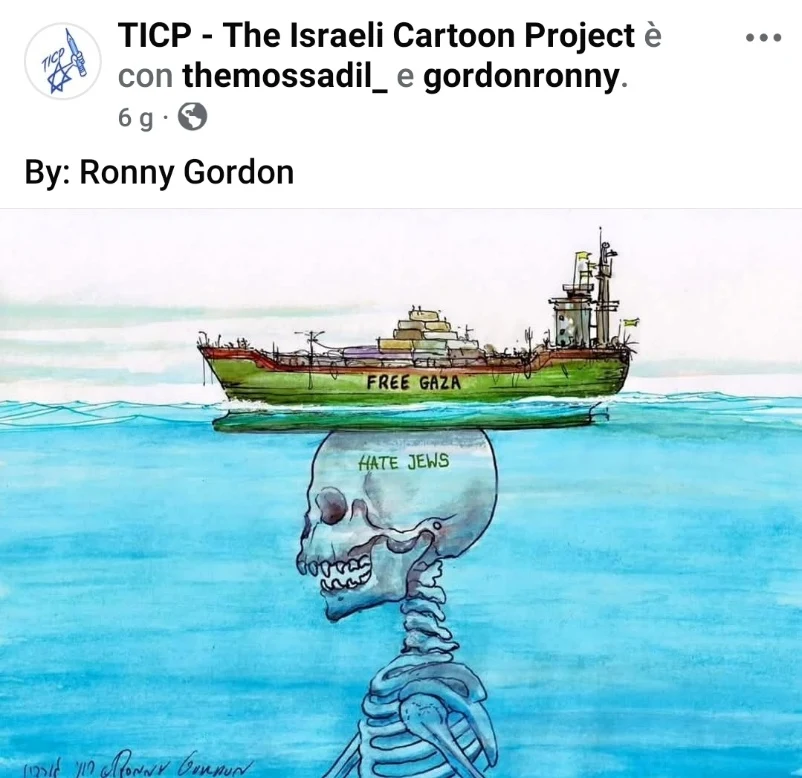
Questa costruzione narrativa si basa sulla strategia retorica dello “svelamento”.
Si invita lo spettatore a guardare oltre ciò che è visibile, come se il messaggio “Free Gaza” fosse solo una maschera, una copertura ideologica dietro cui si celano motivazioni più oscure. Il meccanismo ricorda da vicino la metafora dell’iceberg: ciò che si vede è solo una minima parte, mentre la verità più profonda giace nascosta sotto la superficie. È una tecnica che Goffman (1974) definisce “frame chiuso”, ossia un’interpretazione precostituita che riduce ogni ambiguità. In questo caso, l’apparenza umanitaria è falsa, la realtà è odio puro.
Questa modalità comunicativa non si limita a presentare una visione alternativa dei fatti, ma impone un frame cognitivo binario: o si è contro l’antisemitismo, oppure si è complici di esso. Non viene concesso spazio a posizioni intermedie o alla complessità. Come osservano Chomsky e Herman (2008), è uno dei meccanismi più efficaci della propaganda moderna: etichettare una posizione scomoda con un significato tossico (in questo caso l’antisemitismo) serve a delegittimarla in modo definitivo e senza appello.
A livello simbolico, lo scheletro rappresenta la verità sepolta, l’essenza autentica della nave. È un’operazione ideologica che azzera ogni sfumatura: ogni appello alla liberazione di Gaza viene assimilato ad una pulsione di morte e odio verso gli ebrei. È un esempio lampante di reductionism semantico, ovvero l’atto di ridurre un intero discorso politico ad un singolo significato malvagio, privo di contesto e di storia.
Il potere persuasivo dell’immagine si fonda anche su un altro elemento psicologico: la gratificazione epistemica. Chi guarda la vignetta si sente “più sveglio”, “consapevole”, in grado di vedere ciò che gli altri non colgono. È un meccanismo di validazione cognitiva: il sospetto diventa sapere, la diffidenza diventa verità. Ma, come avverte Gilman (2010), questo tipo di “antisemitismo strumentale” (l’uso dell’accusa di antisemitismo per silenziare critiche legittime) finisce per oscurare la complessità del conflitto e delegittimare ogni voce critica.
La strategia qui utilizzata è potente proprio perché non esplicita l’accusa: la fa emergere visivamente, rendendola quasi autoevidente. Non dice “tutti quelli che sostengono Gaza odiano gli ebrei”, ma lo mostra con una metafora che rende il dissenso indistinguibile dall’odio. Il nemico non viene affrontato sul piano del confronto argomentativo, ma schiacciato simbolicamente sul piano dell’intenzione maligna.
Questa forma di comunicazione, priva di parole ostili ma visivamente devastante, rientra nella propaganda visuale ideologica, dove l’immagine diventa un atto performativo, capace di istruire lo spettatore su cosa pensare e come giudicare, senza mai dichiararlo apertamente.
Come nelle migliori strategie di agenda-setting e framing, descritte da Rosengren (2001), la potenza di tali immagini sta nel loro impatto invisibile: non impongono un’idea, ma rendono inaccettabile qualsiasi alternativa.
In questo contesto, la battaglia non è solo per il controllo del territorio, ma per il controllo del significato.
Bibliografia
Chomsky, N., & Herman, E. S. (2008). La fabbrica del consenso. La politica e i mass media. Il Saggiatore.
Gilman, S. L. (2010). Jews and the Enemy. University of Nebraska Press.
Goffman, E. (1974). Frame Analysis: An Essay on the Organization of Experience. Harvard University Press.
Rosengren, K. E. (2001). Introduzione allo studio della comunicazione. Il Mulino.
13. ISRAEL, SUPERHEROES: l’armatura del Bene nella propaganda visiva
L’immagine, pubblicata da una pagina di sostegno a Israele su Facebook, mostra due composizioni digitali stilizzate: nella prima, un soldato in posa eroica, vestito con un’armatura moderna ma ispirata ai crociati, interamente rivestita con i colori ed i simboli della bandiera israeliana; nella seconda, tre figure maschili simili, armate di spade luminose e vestite con mantelli e corazze identiche, sfilano in formazione con un’espressione determinata. Sullo sfondo, un paesaggio di guerra e rovine, cieli cupi e bagliori elettrici, evoca un’atmosfera post-apocalittica o mitologica. In alto, la scritta: “Israel, superheroes” (Israele, supereroi).
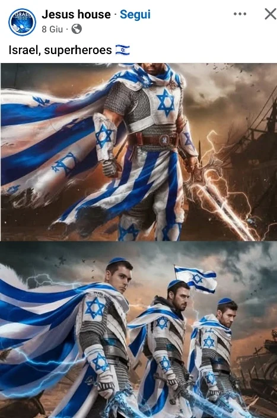
Il messaggio visivo è inequivocabile: Israele viene raffigurato non solo come forza militare, ma come incarnazione del Bene epico, guidato da valori di coraggio, purezza e forza divina. La trasformazione dei soldati in supereroi è una mossa retorica potente: i personaggi non sono più uomini, ma simboli sovrumani, icone morali, protettori invincibili.
La costruzione dell’immagine attinge ad un immaginario tipico della cultura pop (fumetti, videogiochi, Marvel), ma lo piega ad una finalità identitaria e politica. La bandiera israeliana non è solo presente: avvolge, protegge, costituisce l’armatura stessa del combattente. Il messaggio implicito è che non vi è separazione tra Stato, esercito, eroe e missione morale. Il conflitto non è una guerra tra eserciti: è una battaglia tra il Bene (Israele) e il Male indistinto che minaccia la civiltà.
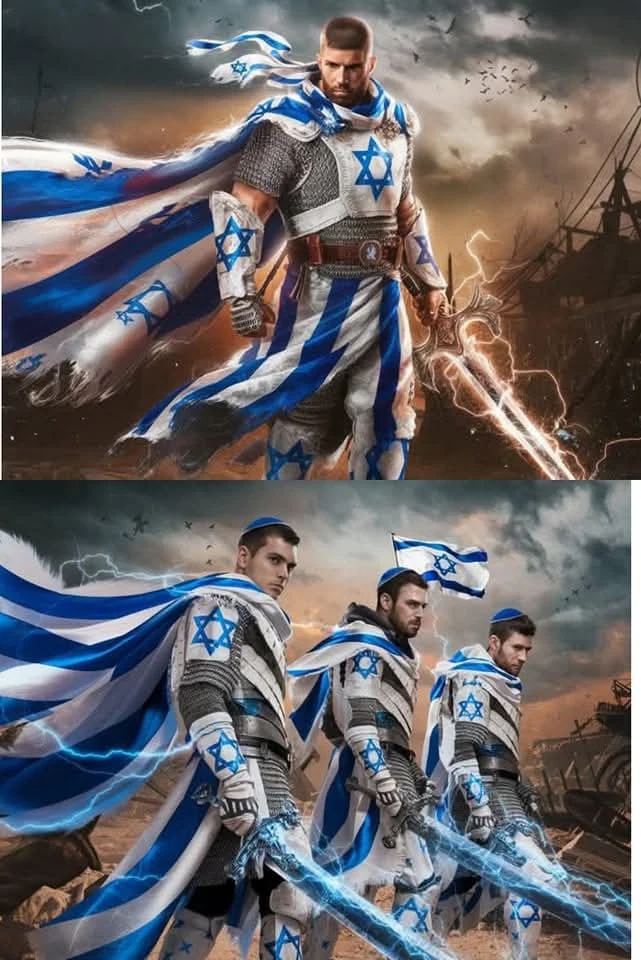
Da un punto di vista psicologico, si assiste alla mitologizzazione dell’identità nazionale: gli elementi della narrazione eroica (forza, purezza, sacrificio, protezione del debole) vengono proiettati su un’immagine militare altamente estetizzata. Come osserva Sontag (2021), la spettacolarizzazione della guerra trasforma la violenza in bellezza visiva, rendendo il giudizio morale più difficile, perché anestetizzato da forme simboliche potenti.
Il rischio, in questo tipo di immaginario, è l’erosione della realtà: l’immagine non mostra dolore, conflitto, ambiguità, ma solo fierezza, determinazione, coesione. Secondo Goffman (1974), la forza del frame imposto è tale da impedire qualsiasi altra lettura: non ci sono civili, non c’è Palestina o Iran e non c’è diplomazia. Solo “noi”, in armatura, chiamati a proteggere il mondo.
Inoltre, l’uso dell’estetica da videogioco o cinecomic contribuisce ad una forma di “normalizzazione dell’epica” che parla soprattutto alle nuove generazioni. L’eroe non è più quello storico, ma quello che combatte in un mondo distrutto, con armi luminose e simboli cristallizzati. È una forma di propaganda estetica in stile whitewashing (ripulitura), che rimuove il sangue e mostra solo il potere.
Come suggerisce Ellul (2023/1962), la propaganda moderna è tanto più efficace quanto più diventa invisibile ed accettabile. Qui, la bandiera e l’uniforme diventano moda, mitologia e destino. Si chiede allo spettatore non di informarsi, ma di identificarsi: se Israele sono questi eroi, come potrei non sostenerli?
In ogni caso, se non studiata in tutte le possibili sfaccettature, la natura di una comunicazione manipolativa presta il fianco alla contro-propaganda.
L’estetica supereroica impiegata in questa immagine (i soldati israeliani difensori supremi, moralmente superiori) è una narrazione visiva che promette giustizia, protezione, eroismo. Come, però, spesso accade nella propaganda, l’immagine seleziona, semplifica. Rimuove la presenza dell’altro, il dolore, le contraddizioni, le conseguenze e rimuove le vittime, ma può essere ribaltata. Allora può essere utile, come esercizio critico, lasciar spazio ad una frattura nell’immaginario:
“Di solito i supereroi non uccidono donne e bambini.”
Questa frase, semplice e diretta, agisce come una dissonanza cognitiva (Festinger, 1957). Incrina l’identificazione estetica, rompe il fascino visivo e restituisce complessità morale a ciò che l’immagine tenta di mitizzare.
Un altro pensiero, altrettanto dissonante, si insinua:
“A patto che il modello non sia Patriota, il controverso protagonista della serie The Boys.”
In quella narrazione, il supereroe non è più simbolo di altruismo, ma di narcisismo, dominio e manipolazione dell’opinione pubblica. Il “difensore” diventa carnefice, pur mantenendo la sua immagine patinata.
È un monito culturale: anche i simboli più potenti possono essere svuotati di etica e riempiti di violenza, se non vengono interrogati.
Bibliografia
Ellul, J. (2023). Propaganda. Piano B Edizioni. (Opera originale pubblicata nel 1962)
Festinger, L. (1957). A theory of cognitive dissonance. Stanford University Press.
Goffman, E. (1974). Frame Analysis: An Essay on the Organization of Experience. Harvard University Press.
Sontag, S. (2021). Davanti al dolore degli altri. Nottetempo.
14. SCHIACCIARE IL NEMICO: disumanizzazione zoomorfa e superiorità morale
La vignetta raffigura un grosso scarabeo nero con i colori della bandiera iraniana sul dorso, nell’atto di essere schiacciato da una scarpa sportiva bianca con una Stella di David blu, simbolo inequivocabile dello Stato di Israele. L’illustrazione, dal tratto digitale netto e semplificato, è stata condivisa su una pagina Facebook intitolata “Beautiful woman soldiers”, solitamente orientata a contenuti più estetizzanti e rassicuranti.
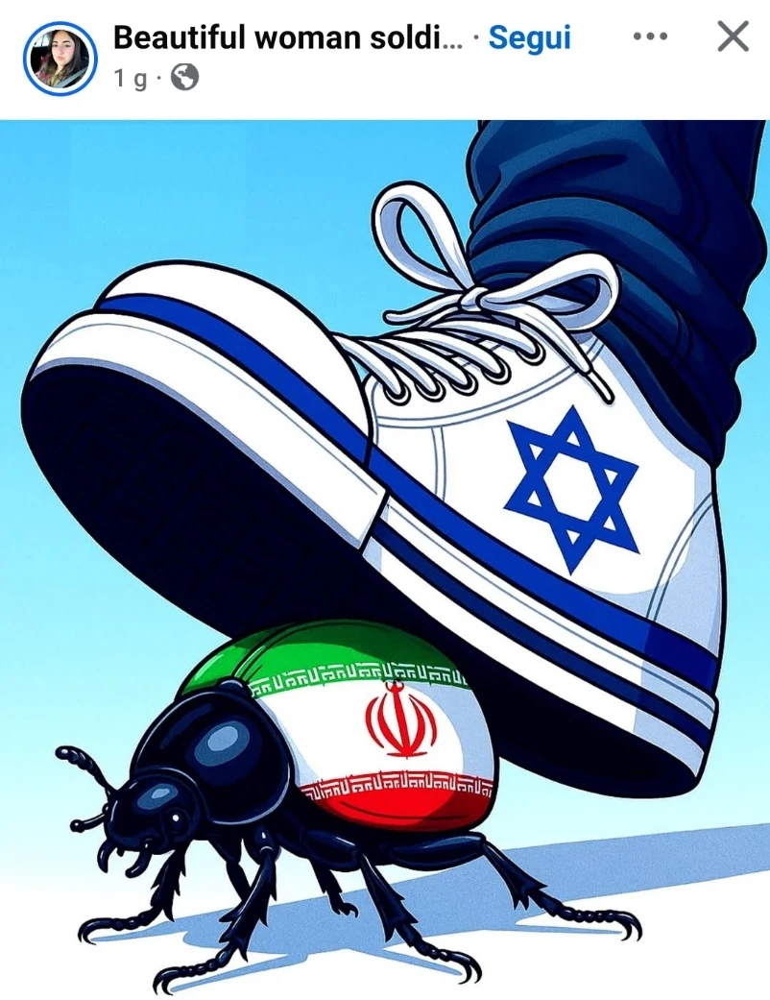
Tuttavia, questa specifica vignetta si discosta nettamente dal loro stile abituale, caratterizzato da figure femminili sorridenti, in contesti addolciti e non esplicitamente violenti. È quindi plausibile che l’immagine sia stata ripresa da altre fonti propagandistiche e rilanciata per amplificarne il messaggio, secondo una logica virale che mescola estetiche diverse pur di rafforzare la narrativa dominante.
Il popolo iraniano non è rappresentato da un volto o da un simbolo umano. L’immagine utilizza una delle più antiche tecniche di propaganda bellica: la disumanizzazione del nemico attraverso la zoomorfizzazione, ovvero una sua rappresentazione come animale, qui uno scarafaggio, un animale storicamente associato a sporco, pericolo, parassitismo e disgusto (anche) morale. Si tratta di una scelta comunicativa potente, che opera a livello inconscio.
Albert Bandura (2017), nel descrivere i meccanismi del disimpegno morale, evidenzia come l’atto di disumanizzare l’avversario renda più facile giustificare la violenza contro di lui: “non è più una persona, ma qualcosa che si può schiacciare”.
Il gesto del piede in fase discendente richiama l’idea di giustizia sommaria, azione inevitabile, automatica, “necessaria” per liberarsi da una minaccia subumana. Non è un piede di guerra, non siamo di fronte ad un classico anfibio militare. L’aggressione appare come un gesto pulito, addirittura banale.
La semplificazione visiva (Iran = scarafaggio) è un perfetto esempio di framing cognitivo totale (Goffman, 1974). L’assenza di dettagli, la simbologia netta, il contrasto binario costruiscono un frame chiuso, che non lascia spazio all’ambiguità interpretativa. Lo spettatore è spinto a identificarsi con la scarpa: il messaggio implicito è che “stare con Israele” significa partecipare all’eliminazione di un parassita.
Dal punto di vista emotivo, l’immagine attiva meccanismi di rapimento emozionale (emotional hijacking), uniti ad un senso di rivalsa e pulizia: la violenza viene estetizzata come igiene morale. La scarpa bianca rafforza questo messaggio, evocando purezza e legittimità.
La strategia retorica impiegata in questa immagine ricorda da vicino alcune delle categorie del totalismo psicologico delineate da Robert Jay Lifton (1961):
Dispensazione dell’esistenza: il nemico perde ogni diritto di essere rappresentato come umano. L’Iran non ha un volto, né una voce.
Loading the Language: l’intera immagine è costruita come un linguaggio visivo “carico”, in cui i simboli (scarpa, stella, scarafaggio) comunicano più di qualsiasi parola.
Scienza sacra: Israele è raffigurato come la forza ordinatrice, superiore per civiltà, che ha il diritto morale di schiacciare ciò che minaccia l’ordine.
Infine, la prospettiva dall’alto rafforza una posizione di dominio verticale, ideologicamente interiorizzabile. Lo spettatore si trova a guardare dall’alto verso il basso, e con ciò viene implicitamente reso complice della scena.
Bibliografia
Bandura, A. (2017). Disimpegno morale: Come facciamo del male continuando a vivere bene. Trento: Centro Studi Erickson.
Goffman, E. (1974). Frame Analysis: An Essay on the Organization of Experience. Harvard University Press.
Lifton, R. J. (1961). Thought reform and the psychology of totalism: A study of “brainwashing” in China. W. W. Norton & Company.
QUANDO USI LA PROPAGANDA PER SPIEGARE LA DIFFERENZA FRA REALTÀ E PROPAGANDA
Analisi psicologica e semiotica di un meme virale (Facebook, giugno 2025)
Nel post analizzato, diffuso dalla pagina “Israel News Agency” e intitolato “Reality vs. Propaganda”, ci si trova di fronte ad una struttura comunicativa tanto semplice quanto efficace: una composizione visiva divisa in due metà, in cui il messaggio non viene argomentato, ma reso evidente per contrasto.
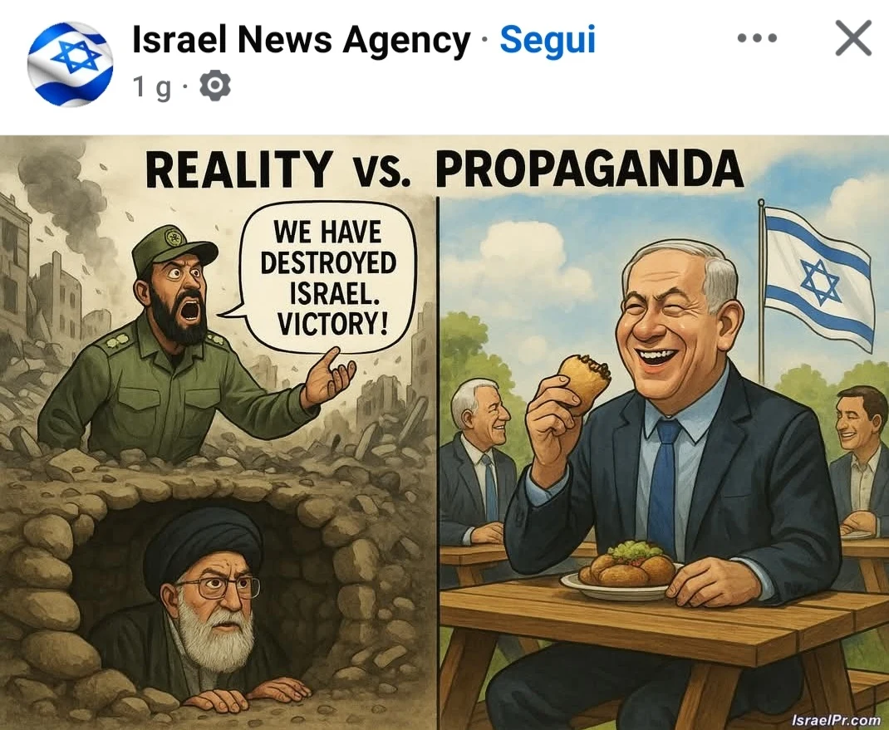
A sinistra, in una città completamente distrutta, un alto ufficiale iraniano proclama con enfasi esaltata: “We have destroyed Israel. Victory!” (“Abbiamo distrutto Israele. Vittoria!”). Nella parte bassa, si intravede una figura facilmente riconoscibile come l’Ayatollah Khamenei, ritratto mentre si nasconde in un rifugio sotterraneo.
A destra, in netto contrasto, Benjamin Netanyahu è seduto in un contesto sereno, sotto una bandiera israeliana, mentre mangia falafel in compagnia di altri uomini ben vestiti, rilassati e sorridenti.
Questa composizione costruisce una narrazione morale implicita: da un lato l’irrazionalità aggressiva, il delirio autodistruttivo, la rovina negata; dall’altro la civiltà, la stabilità, la normalità quotidiana. La propaganda nemica (suggerisce il meme) è talmente slegata dai fatti da proclamare la distruzione di Israele mentre l’unico distrutto è il proprio contesto.
In questa affermazione di “verità”, però, si cela il cuore del paradosso: il meme si propone come antidoto alla propaganda, mentre ne adotta a pieno titolo linguaggi, strutture, codici e finalità. È ciò che potremmo definire meta-propaganda: una forma comunicativa che maschera la propria intenzionalità persuasiva sotto le spoglie della denuncia dell’inganno altrui.
Dal punto di vista psicologico, questa strategia attiva numerosi meccanismi profondi. Il primo è la ridicolizzazione dell’avversario, ottenuta non solo con l’esagerazione delle espressioni facciali e del linguaggio, ma con la messa in scena di una contraddizione grottesca: dichiarare la vittoria mentre si è immersi nelle rovine.
Come sottolinea Lifton (1961), nei sistemi totalitari la costruzione del nemico passa attraverso la sua umiliazione simbolica e la sua infantilizzazione cognitiva: non è semplicemente malvagio, è anche stupido, cieco, fuori dalla realtà. Il portavoce iraniano del meme non è un soggetto razionale, ma una caricatura, un burattino tragico che agisce come portavoce di un potere che si nasconde, letteralmente, sottoterra. Khamenei stesso non appare come un leader, ma come un fuggiasco, privato di potere e voce: un’immagine che funziona più per sottrazione che per rappresentazione.
Il secondo elemento chiave è la costruzione di una realtà pacificata, serena, ordinata nella metà israeliana dell’immagine. Netanyahu, mentre consuma falafel, incarna l’idea di una Israele civile, normale, ben nutrita e perfettamente funzionante, immune al caos proclamato dal nemico. È un’operazione simbolica sottile, ma potente, in cui l’alimentazione stessa diventa veicolo ideologico: mangiare non è solo nutrirsi, ma essere radicati, stabili, presenti nel proprio territorio. Sontag (2021), nel suo saggio Davanti al dolore degli altri, ricorda come l’estetica della normalità possa funzionare da scudo narrativo contro l’interrogazione morale: ci viene mostrato ciò che appare rassicurante affinché dimentichiamo ciò che è drammatico. La guerra non esiste in quella parte di immagine. Il conflitto è tutto spostato sull’altro lato, confinato in una zona emotivamente connotata come caotica, tragica, assurda.
Questa dualità narrativa lavora anche attraverso ciò che Goffman (1974) definisce frame cognitivo: l’immagine impone una lettura predefinita della realtà, organizzando l’esperienza visiva in modo tale da non lasciare spazio all’ambiguità. Non ci viene chiesto di ragionare, ma di aderire. Il portavoce iraniano è ridicolo, Khamenei è spaventato, Netanyahu è simpatico: il giudizio morale è guidato da segnali visivi, non da argomentazioni. Il sorriso, il cibo, il cielo sereno producono un effetto alone (Kahneman, 2012): la positività percepita di un elemento (il falafel, il volto rilassato) si estende a tutto il contesto, generando una valutazione favorevole della scena.
Albert Bandura (2017), nei suoi studi sul disimpegno morale, descrive con precisione come la normalizzazione della propria parte e la demonizzazione dell’altra facilitino la sospensione del pensiero critico e la giustificazione di azioni altrimenti inaccettabili. In questo caso, mentre l’Iran viene rappresentato come allucinato e autodistruttivo, Israele è reso invisibilmente invincibile e, soprattutto, eticamente inattaccabile. Il messaggio non è mai esplicito, ma chiaramente performativo: “se il nemico è ridicolo, noi siamo nel giusto”.
Infine, la struttura stessa dell’immagine attiva una dinamica tipica della propaganda contemporanea: l’inversione accusatoria. Accusare l’altro di propaganda serve a legittimare la propria narrazione come “verità”. In un contesto, però, come quello della guerra comunicativa digitale, ciò che viene presentato come reale è sempre il frutto di una costruzione visiva (selettiva, strategica, soprattutto orientata). La verità evocata non è documentata: è messa in scena. In questo senso, il meme analizzato è un esempio perfetto di propaganda di secondo livello: non ci invita a credere ad una storia, ma a smettere di credere a quella dell’altro, offrendocene una già pronta in cambio...con ironia, colori, sorrisi e falafel.
Quello che resta fuori dall’immagine è la complessità. Nessuna vittima, nessun civile, nessuna guerra reale è rappresentata. Solo due maschere: il buffone distrutto e il vincitore rilassato. Come scrive Chomsky (2008), la propaganda più efficace non è quella che impone una verità, ma quella che esclude il dissenso e cancella le alternative, rendendo impensabile ogni narrazione diversa.
In conclusione, la forza di questa immagine non sta solo nel suo contenuto, ma nella sua pretesa neutralità. È proprio la sua forma “didattica”, la sua divisione netta tra “realtà” e “propaganda”, a renderla pericolosamente persuasiva. Perché chi guarda non sente di essere manipolato: sente di stare finalmente vedendo “come stanno davvero le cose”. La propaganda trova così la sua massima efficacia: quando si presenta come smascheramento.
Bibliografia
Bandura, A. (2017). Disimpegno morale: Come facciamo del male continuando a vivere bene. Trento: Centro Studi Erickson.
Chomsky, N., & Herman, E. S. (2008). La fabbrica del consenso. La politica e i mass media. Il Saggiatore.
Goffman, E. (1974). Frame Analysis: An Essay on the Organization of Experience. Harvard University Press.
Kahneman, D. (2012). Pensieri lenti e veloci. Milano: Arnoldo Mondadori Editore.
Lifton, R. J. (1961). Thought Reform and the Psychology of Totalism: A Study of “Brainwashing” in China. Norton.
Sontag, S. (2021). Davanti al dolore degli altri. Nottetempo.
CAVALCARE LA BOMBA: POTERE, COMICITÀ E DISUMANIZZAZIONE NELLA PROPAGANDA VISIVA
Analisi simbolica e psicopolitica di una vignetta virale (Facebook, "Israel News Agency")
In una vignetta condivisa dalla pagina “Israel News Agency” su Facebook, vediamo Benjamin Netanyahu e Donald Trump intenti a cavalcare una bomba, come fosse un destriero, lanciata contro un uomo in fuga, riconoscibile nei tratti caricaturali dell’Ayatollah Ali Khamenei. La scena è ambientata in un generico contesto urbano mediorientale, segnato dalla presenza di una bandiera iraniana. L'immagine, surreale e grottesca, è costruita come una gag visiva, ma affonda le radici in una tradizione precisa: quella della propaganda spettacolarizzata, che trasforma la minaccia in umorismo e la violenza in intrattenimento.
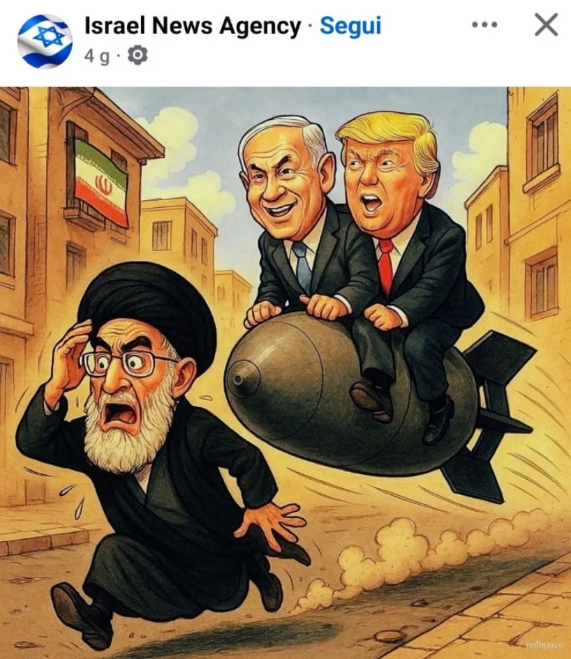
Il riferimento più evidente, anche se non dichiarato, è la celebre scena finale di Il dottor Stranamore - Ovvero: come ho imparato a non preoccuparmi e ad amare la bomba (Kubrick, 1964), in cui un ufficiale americano cavalca entusiasticamente una bomba atomica come un cowboy. La citazione iconografica non è solo stilistica: in entrambi i casi, la cavalcata dell’ordigno non rappresenta un’azione militare realistica, ma una metafora dell’assurdità bellica, in cui l’entusiasmo per il potere distruttivo finisce per ridicolizzare chi lo esercita.
Tuttavia, mentre Kubrick usava l’ironia per denunciare il delirio dell’apocalisse nucleare, qui l’effetto è opposto: la risata diventa arma retorica per rafforzare la superiorità dei protagonisti e umiliare il nemico. La bomba, volutamente priva di segni di appartenenza nazionale, non è né americana né israeliana: è simbolo condiviso del potere offensivo, su cui i due alleati (Netanyahu e Trump) sono uniti nella missione, ma gerarchicamente distinti. Netanyahu è seduto davanti, saldo, concentrato, sorridente: è il pilota. Trump è dietro, teatrale, con la bocca aperta in un iconico “Yee-haw!”, richiamo diretto all’estetica del rodeo e alla gestualità esuberante dei cowboy. Trump non guida e, nonostante il suo ingombrante profilo politico, la vignetta gli assegna un ruolo da passeggero: supporta l’azione, ma non la comanda.
Questo dettaglio spaziale, apparentemente innocuo, contiene un messaggio potente: Israele non è solo partecipe, ma protagonista, capace di orientare l’azione anche del suo alleato più potente. L’alleanza è funzionale, ma non paritaria. Una narrazione che rovescia l’immaginario tradizionale della dipendenza geopolitica e che presenta Netanyahu come stratega, Trump come “carburante”. La disposizione spaziale e gestuale dei corpi veicola gerarchie più dei discorsi. La leadership visiva è più potente di qualsiasi dichiarazione.
È una forma visiva di soft dominance: un dominio che non si impone con aggressività o imposizioni dirette, ma con ironia, attraverso la costruzione simbolica di ruoli, gesti e posture. La guida si manifesta senza parole, ma risulta evidente a chi guarda.
L’altro elemento centrale è la rappresentazione dell’Ayatollah iraniano. Non solo è in fuga, sudato e spaventato, ma è l’unico a muoversi nella scena. Non vediamo civili, né danni, né le conseguenze del missile: vediamo solo lui, simbolo vivente di un potere ridotto alla fuga e al ridicolo. Come osserva Lifton (1961), la propaganda totalizzante non si accontenta di opporre bene e male: cerca di negare all’altro il diritto di esistere come soggetto degno. Qui Khamenei non è un antagonista: è un clown, un bersaglio ridicolo. Ridere del nemico significa rimuoverne la complessità, l’umanità, e con essa la necessità del confronto.
Dal punto di vista psicologico, siamo di fronte a un classico esempio di disimpegno morale per deumanizzazione (Bandura, 2017): la violenza implicita non è percepita come tale perché l’oggetto colpito è già stato spogliato della sua legittimità. Se chi fugge è un buffone, la bomba diventa uno scherzo. Se ridiamo, non è per la distruzione, ma per il meritato panico dell’altro. È il meccanismo che Sontag (2021) chiama anestesia morale: quando il dolore si trasforma in comicità, il giudizio etico si disattiva.
La bomba non è ancora caduta, la distruzione è solo promessa. È una forma di propaganda pre-giustificatoria: il nemico è già colpevole (sta fuggendo), la bomba è già legittima (è guidata da chi sorride), lo spettatore è già dalla parte giusta (quella che fa ridere): nessun dolore e/o ambiguità, nessuna guerra reale: solo fuga.
L’assenza di qualunque elemento di complessità (nessun contesto storico) rafforza la natura della vignetta come dispositivo di framing assoluto (Goffman, 1974): lo spettatore non può che interpretare ciò che vede come un gesto liberatorio e giusto. Non ci sono alternative: o si sta con i due cowboy della bomba, o si è ridicoli come chi scappa.
In definitiva, il punto più sottile è proprio questo: il nemico non viene odiato, ma ridicolizzato. Non è un avversario temibile, ma una figurina goffa e isolata. In questo senso, il potere della vignetta non sta tanto nel giustificare un attacco, ma nel banalizzarlo. Nella risata collettiva che produce, non c’è spazio per l’empatia. Proprio per questo, è propaganda che funziona.
Bibliografia
Bandura, A. (2017). Disimpegno morale: Come facciamo del male continuando a vivere bene. Trento: Centro Studi Erickson.
Goffman, E. (1974). Frame Analysis: An Essay on the Organization of Experience. Harvard University Press.
Kubrick, S. (Regista). (1964). Il dottor Stranamore - Ovvero: come ho imparato a non preoccuparmi e ad amare la bomba [Film]. C.E.I.A.D. / Columbia Pictures.
Lifton, R. J. (1961). Thought reform and the psychology of totalism: A study of “brainwashing” in China. W. W. Norton & Company.
Sontag, S. (2021). Davanti al dolore degli altri. Nottetempo.
LA PROPAGANDA ANTI-ISRAELE
In questo saggio si è scelto di analizzare anche la propaganda visiva pro-Palestina ed anti-Israele, non per un intento di bilanciamento artificiale, ma per una ragione più profonda: la necessità di allargare lo sguardo su un conflitto in cui le immagini, prima ancora delle parole, costruiscono il consenso. La spinta iniziale di questa analisi nasce infatti da una constatazione empirica: oggi, nello spazio dei social media, la presenza di immagini pro-Israele è massiccia, capillare ed algoritmicamente favorita. Non si tratta solo di quantità, ma di immediatezza, diffusione virale ed accessibilità linguistica. Le immagini pro-Israele appaiono, anche senza essere cercate, perché inserite in un flusso visivo che si impone all’utente, intercettando la soglia dell’attenzione prima ancora che quella della coscienza.
Al contrario, le immagini di propaganda anti-Israele o pro-Palestina sono spesso assenti o marginali in questi stessi spazi. Per trovarle, è necessario uscire dall’ecosistema dei social, cercare attivamente, esplorare siti, archivi o circuiti comunicativi meno battuti. Non è una differenza secondaria: è la distanza tra un’immagine che viene a cercarti ed una che devi andare a cercare. È anche questa asimmetria (visiva, informativa, affettiva) che merita di essere tematizzata. L’atto stesso di ricercare queste immagini diventa così parte integrante della riflessione: perché alcune narrazioni si rendono visibili da sole, mentre altre devono essere letteralmente riportate alla luce?
Analizzare anche la contro-propaganda non serve quindi a pareggiare i conti, ma a mettere in evidenza lo squilibrio stesso. In un’epoca in cui la guerra è anche una battaglia di storytelling visivo, ciò che non circola parla tanto quanto ciò che viene mostrato. Ciò che si nasconde nell’ombra, spesso, è ciò che può restituire profondità critica al nostro sguardo.
1. GENERATION AFTER GENERATION: EREDITÀ EPICA DELLA RESISTENZA
Il poster mostra un giovane incappucciato che regge con fermezza una bandiera palestinese, il volto coperto da una kefiah bianca, simbolo ricorrente di identità e resistenza. Dietro di lui si staglia una figura nera, un’ombra di un anziano, che non impugna armi, ma alza un pugno chiuso verso l’alto e stringe un bastone nella mano sinistra. Non è una proiezione bellica, ma una presenza simbolica che parla di passato, trasmettendo un’eredità che va oltre il tempo individuale. In basso, un copertone in fiamme si staglia nel paesaggio rosso, e la fiamma che se ne sprigiona ha una forma inquieta e disturbante, come se vi si potesse scorgere un profilo umano o mitologico, quasi demoniaco. Non appare come una semplice combustione, ma come un’apparizione, un’emanazione di rabbia, che sembra affiorare dalla materia bruciata: ad emergere dal fuoco, è la psiche collettiva. L’immagine veicola un messaggio potente, scandito anche verbalmente dallo slogan: “Generation after generation until total liberation” (Generazione dopo generazione fino alla totale liberazione). La ripetizione produce una struttura ritmica, quasi sacrale, che imprime nel pensiero la natura ciclica ed inevitabile della lotta. Non si tratta di un appello isolato, ma di una dichiarazione genealogica: la resistenza non nasce oggi, né finirà domani. Ogni generazione eredita il compito dalle mani della precedente, in un passaggio che somiglia più ad un vincolo simbolico che ad una scelta libera. È qui che il poster assume una valenza profondamente psicologica: l’individuo non è solo chiamato ad agire, ma a riattualizzare un’identità che esiste prima di lui. L’ombra retrostante, proprio in quanto memoria visiva della lotta, si configura come una sorta di “totem generazionale”. Secondo la lettura freudiana della totemizzazione (Freud, 1921), il totem rappresenta il padre mitico, portatore di un’etica collettiva e fondamento dell’identità tribale. Qui il totem agisce come richiamo morale ed affettivo alla continuità. È il padre simbolico che ci osserva dal passato, non per comandare, ma per ricordare. La sua sacralità non è dominatrice, ma trasmessa.
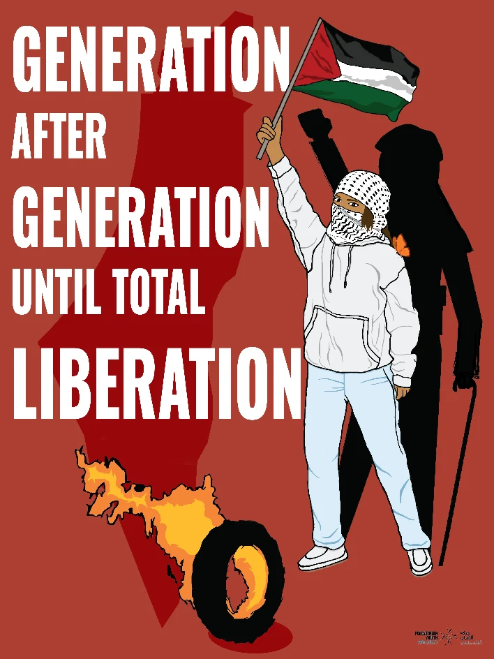
Sulla spalla sinistra del giovane palestinese si posa una farfalla: quasi invisibile, ma densa di significato. La farfalla è simbolo antico di trasformazione, rinascita e speranza. In un contesto dominato da rosso, fuoco e memoria, la sua presenza introduce un’altra tonalità: quella della leggerezza e della metamorfosi. Non interrompe il racconto della lotta, ma lo riequilibra, come se dentro l’armatura simbolica del combattente restasse spazio per la fragilità, la bellezza e la vita. È un dettaglio che parla al lettore silenziosamente.
Lo sfondo rosso, la mappa trasparente e la bandiera contribuiscono a creare un frame emotivo chiuso. Secondo Goffman (1974), i frame sono strutture cognitive che selezionano e organizzano l’esperienza, e qui il frame è epico, eroico, eppure non necessariamente armato. L’assenza di nemici visibili rafforza il fatto che questa propaganda non è indirizzata contro un oppressore specifico, ma a favore di un’identità. Il conflitto, più che materiale, è narrativo.
Dal punto di vista della dinamica interiore, questa immagine attiva sentimenti di orgoglio, dovere, e soprattutto appartenenza. Il giovane rappresentato è “qualsiasi giovane”. Il volto nascosto lo rende intercambiabile. È proprio in questa neutralità visiva che l’immagine diventa universale, adattabile, trasferibile ad ogni giovane che si senta parte di una causa collettiva. Non vi è glorificazione della violenza, ma glorificazione della memoria e della perseveranza.
In termini di costruzione simbolica, la fiamma che si innalza dal copertone definisce una condizione psichica: una sorta di presenza spettroide, che potrebbe rappresentare tanto l’eredità del trauma quanto la persistenza del desiderio di liberazione. È una resistenza che prende forma nello spazio mentale, prima ancora che nel territorio fisico.
In conclusione, questo poster non cerca di convincere, ma di consolidare. Non mira a suscitare odio verso l’altro, ma a costruire continuità identitaria verso sé stessi. È propaganda che non parla solo di conflitto, ma di genealogia. In questo senso, il messaggio non è solo politico, ma psichico: esistere è ricordare chi si è stati, e resistere è non tradire chi ci ha preceduti.
Bibliografia
Freud, S. (1921). Psicologia delle masse e analisi dell’Io. In Opere (Vol. 9). Torino: Bollati Boringhieri, 2006.
Goffman, E. (1974). Frame Analysis: An Essay on the Organization of Experience. Harvard University Press.
2. “WE’RE JUST DEFENDING OURSELVES”: SATIRA E INVERSIONE DEL DISCORSO LEGITTIMANTE
La vignetta mostra una scena semplice ma carica di tensione simbolica: da un lato, un soldato israeliano si affaccia da dietro un muro e indica un piccolo ed innocuo razzo nemico conficcato nella parete; dall’altro, un’enorme ondata di missili, con la Stella di David ben visibile, vola in direzione opposta. Il cielo è riempito da questa traiettoria asimmetrica di fuoco e distruzione, mentre in basso a destra un edificio brucia tra le fiamme. Nel mezzo, dentro un balloon fumettistico, la voce del soldato esclama: “You see! We’re just defending ourselves” (“Vedi? Ci stiamo solo difendendo”).
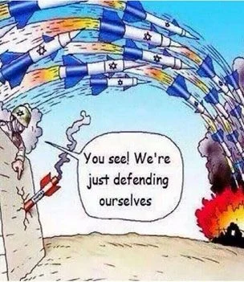
L’effetto immediato è quello dell’ironia tragica. Il contrasto tra la prova singola (il razzo inerte conficcato nel muro) e la risposta sproporzionata suggerisce che la difesa evocata dal discorso ufficiale è in realtà una maschera per l’attacco. Il soldato, protetto dietro una barriera ed intento a mostrare il segno di un’aggressione ricevuta, rappresenta la narrazione israeliana della legittima difesa. Tuttavia, la realtà visiva che lo circonda racconta un’altra verità: decine di missili partono nella direzione opposta, distruggendo visibilmente ciò che si trova al di là del confine. È il classico meccanismo della propaganda satirica: smontare una narrativa ripetuta attraverso una rappresentazione visiva che ne rivela l’incongruenza.
La potenza della vignetta sta nel capovolgimento percettivo: ciò che viene affermato (“ci stiamo difendendo”) viene immediatamente smentito da ciò che si vede. Il testo e l’immagine non si rafforzano a vicenda, ma si contraddicono. Questa dissonanza crea un effetto di destabilizzazione cognitiva, costringendo chi guarda a chiedersi a quale delle due versioni voglia credere. La forza della propaganda satirica non è tanto nell’indottrinamento, quanto nella falla semantica che apre nel discorso dominante.
Dal punto di vista psicologico, la vignetta agisce su due livelli. Il primo è quello dell’indignazione morale: la presunta legittimità dell’autodifesa viene ridicolizzata, e con essa il potere che se ne fa scudo. Il secondo è quello della vergogna retroattiva: lo spettatore che ha magari accolto con naturalezza la formula “ci stiamo solo difendendo” è costretto a confrontarsi con la sua ingenuità percettiva. È un’operazione di svelamento, che lavora sia sulla compliance passiva (l’adesione automatica e acritica al linguaggio del potere) sia sul senso più profondo di complicità passiva, che affiora quando ci si rende conto di aver accettato, per abitudine o per convenienza, una narrativa che giustifica l’ingiustificabile.
Il messaggio visivo è costruito attraverso una asimmetria narrativa estrema: un piccolo ed innocuo razzo da una parte, una pioggia di fuoco dall’altra. Non è solo l’equilibrio delle forze a essere sbilanciato, è il linguaggio stesso della guerra che viene esposto come menzognero. Qui risuona il concetto di “fabbrica del consenso” di Chomsky e Herman (2008): non è ciò che accade a determinare il racconto, ma il modo in cui viene raccontato da chi ha il potere di definirne i termini. In questo senso, la vignetta è un gesto di rottura simbolica, una piccola forma di contro-potere iconografico.
Anche la scelta del medium (la vignetta umoristica) non è neutra. L’umorismo è spesso il mezzo più efficace per dire l’indicibile, per far passare contenuti che, se espressi in modo diretto, verrebbero rifiutati o censurati. Come ha osservato Sontag (2021), le immagini che fanno ridere possono farlo solo se colpiscono un nervo scoperto. Qui il riso è amaro, quasi colpevole: ciò che viene messo alla berlina è la costruzione stessa del linguaggio bellico.
In conclusione, questa immagine non fa propaganda nel senso tradizionale del termine: non chiede adesione ad un fronte, ma mette in crisi un punto di vista. È una forma di resistenza visiva che non mostra la vittima, ma l’incongruenza del carnefice. In questo, si avvicina più alla satira politica che all’agitazione ideologica. Non è un invito all’azione, ma una provocazione cognitiva. L’unico obiettivo è far crollare la convinzione, accolta spesso come ovvia, che la violenza possa ancora essere chiamata difesa.
Bibliografia
Chomsky, N., & Herman, E. S. (2008). La fabbrica del consenso. La politica e i mass media. Il Saggiatore.
Sontag, S. (2021). Davanti al dolore degli altri. Nottetempo.
3. “THE NAKBA NEVER ENDED”: IL DOLORE COME CONTINUITÀ STORICA E TRAUMATICA
Due occhi emergono da un volto coperto, sormontato da linee ondulate che richiamano le pieghe della kefiah palestinese. Sono occhi profondi, circondati da un’ombra nera che non è solo tratto grafico, ma segno di stanchezza, di fatica, di notti insonni. Dai lati scorrono due lacrime rosse, come se il pianto stesso avesse assunto la forma del sangue. Al centro, su uno sfondo bianco sporco, campeggia la scritta in maiuscolo: “THE NAKBA NEVER ENDED. THE COLONIZER LIED” (“La Nakba non è mai finita. Il colonizzatore ha mentito”).
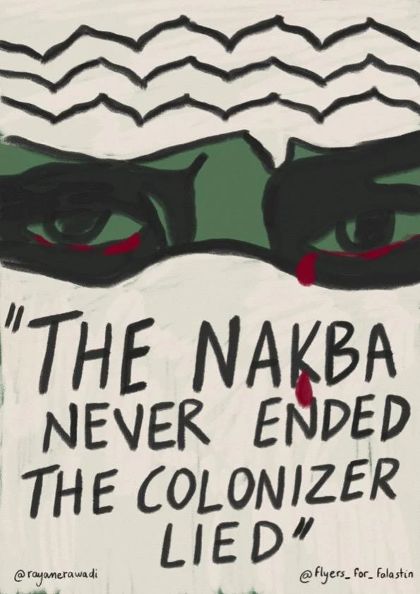
Questa immagine si muove su un registro emotivo e politico. Qui non c’è fuoco o lotta, ma solo sguardo, memoria e parola. La Nakba (il termine arabo per catastrofe, che designa l’esodo forzato di centinaia di migliaia di palestinesi nel 1948) non è qui rappresentata come evento chiuso o superato, ma come ferita permanente, stato psichico cronico, condizione che attraversa le generazioni. Il poster dichiara che il trauma non è un ricordo, ma un tempo che non si chiude mai. La bugia del colonizzatore, dunque, non riguarda solo i fatti, ma il tempo stesso: aver detto che è finita, mentre è ancora in corso.
È in questo punto che l’immagine tocca una delle corde più profonde della propaganda visiva contemporanea: la narrazione traumatica non come memoria, ma come presente. Il volto è anonimo, eppure personalissimo. Non sappiamo se sia uomo o donna, anziano o giovane, ma sappiamo che è palestinese e che sta soffrendo. Le lacrime rosse non urlano, non accusano, non spiegano: scendono. È la logica descritta da Sontag (2021): quando il dolore diventa immagine, non chiede di essere spiegato, ma visto.
Ciò che inoltre colpisce con forza è la scelta terminologica. Il nemico non viene mai nominato direttamente: non si parla di Israele, né di sionismo. Si usa un’etichetta funzionale, sistemica, strutturale (“colonizzatore”) che sposta il piano del discorso da quello politico a quello storico-morale. Non nominare Israele significa non riconoscerne nemmeno l’identità: è un rovesciamento radicale, in cui l’oppressore non è un soggetto, ma un ruolo. Il colonizzatore non ha volto, non ha nome: ha solo una funzione. Questa forma di astrazione strategica trasforma la propaganda in un linguaggio universale, che non riguarda più solo la Palestina, ma tutte le storie di colonizzazione e rimozione.
È un’operazione linguistica e simbolica potente, che si muove sul terreno della disumanizzazione inversa: non mi interessa chi sei, ma cosa fai. Se ciò che fai è colonizzare, mentire e cancellare, allora sei colonizzatore, a prescindere dal nome che porti. Il nemico, così, non è un popolo ma una struttura di dominio, e chi ne fa parte, o la giustifica, è incluso nel campo della menzogna.
Dal punto di vista psicologico, il poster funziona come uno specchio interiore: interroga lo spettatore sul proprio ruolo di testimone. Non si tratta di persuadere, ma di esporre il trauma come dato. In questo senso, l’immagine è più vicina a un elaborato clinico che a un gesto politico. Non racconta cosa bisogna fare, ma mostra cosa accade quando il dolore si cronicizza e viene negato. La frase “il colonizzatore ha mentito” ha quindi un doppio peso: è un’accusa storica, ma anche una diagnosi culturale. La menzogna non è solo nel passato, ma nell’invisibilità presente.
Dal punto di vista visivo, il volto è parzialmente nascosto: la kefiah copre quasi tutto, e la scritta attraversa l’immagine come una ferita verticale. Non si vede il corpo, solo gli occhi e le lacrime. Anche le parole sembrano diventare parte del volto: non raccontano una storia, la incarnano. In questa sovrapposizione tra immagine e testo “scritto di proprio pugno”, la propaganda diventa pienamente visiva, dove ogni elemento (sguardo, silenzio, scrittura) parla lo stesso linguaggio del dolore.
A livello profondo, questa immagine richiama ciò che Freud (1920) definiva come “ritorno del rimosso” nei fenomeni post-traumatici. La Nakba, qui presentata come qualcosa che non è mai davvero finita, si comporta come un dolore psichico che non riesce a trovare una via d’uscita. Non può essere elaborato, e proprio per questo torna, si ripresenta. È un dolore che cambia forma, ma che resta, perché non è mai stato davvero riconosciuto. In questa immagine, il dolore non è solo raccontato: è il cuore stesso del messaggio. Non c’è bisogno di grida o di gesti estremi. La sofferenza si comunica con discrezione, ma non per questo è meno intensa. È una propaganda diversa, che non cerca l’eroismo o la gloria, ma si affida al silenzio, alle lacrime di sangue che sgorgano dagli occhi. In questa misura contenuta, si fa ancora più potente.
Bibliografia
Freud, S. (1920). Al di là del principio di piacere. In Opere (Vol. 9). Torino: Bollati Boringhieri, 2006.
Sontag, S. (2021). Davanti al dolore degli altri. Nottetempo.
4. “END THE OCCUPATION”: catene, identità e il potere della vittima
Al centro, in primo piano, due mani ammanettate occupano la scena: i polsi serrati nel metallo si mostrano in posizione centrale, ferme, inclinate verso il basso. Non c’è movimento, ma tensione. È una postura che non evoca la lotta né la resa, ma piuttosto la prigionia esibita, la condizione mostrata come accusa: è il potere della vittima.
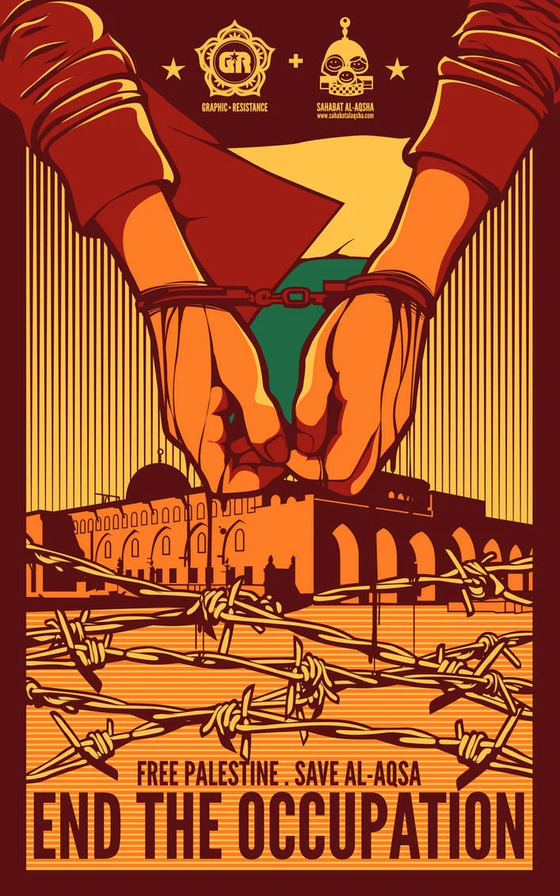
Dietro di esse, stilizzata ma riconoscibile, la moschea di Al-Aqsa sorge circondata da filo spinato, mentre in basso campeggia la scritta in maiuscolo: “END THE OCCUPATION” (ponete fine all’occupazione), preceduta da “FREE PALESTINE. SAVE AL-AQSA” (liberate la Palestina. Salvate Al-Aqsa). Le braccia emergono da un fondo che richiama visivamente i colori della bandiera palestinese, collocata graficamente tra i due avambracci come simbolo centrale e identitario dell'intera composizione. La forza di questa immagine risiede nella sua immediatezza simbolica. Le manette parlano da sole: rappresentano la perdita della libertà, la subordinazione, l’imposizione. In questo gesto silenzioso si attiva un meccanismo psicologico potente, dove il soggetto oppresso prende parola attraverso le catene. La prigionia non è qui un destino passivo, ma una realtà esposta con fermezza, come a dire: “guardami, guarda cosa mi è stato fatto”.
Il riferimento esplicito ad Al-Aqsa introduce un secondo livello, identitario e spirituale. Non si tratta soltanto di territori, ma di simboli sacri: la moschea recintata parla di un’occupazione che tocca il cuore culturale e religioso di un popolo. L’immagine comunica quindi che ciò che è imprigionato non è solo un corpo, ma una fede, un’origine, un diritto ad esistere nella propria terra e nella propria storia. Ma la sacralità di quel luogo non è univoca. Per i palestinesi e il mondo musulmano, Al-Aqsa rappresenta il terzo luogo santo dell’Islam (dopo la Mecca e Medina), ma per gli ebrei, quel sito corrisponde al Monte del Tempio, dove un tempo sorgevano il Primo e il Secondo Tempio di Gerusalemme: è il luogo più sacro dell’ebraismo. Come osserva Armstrong (2000), questa sovrapposizione rende Al-Aqsa un punto di collisione simbolica, in cui due memorie sacre (islamica ed ebraica) si contendono lo stesso spazio.
In questa immagine, la moschea resta inaccessibile, chiusa, come una promessa negata. L’uso del filo spinato rafforza la percezione di chiusura e oppressione. Esso attraversa l’intera parte inferiore dell’immagine, come se separasse il mondo visibile dallo spettatore. Non solo il personaggio è prigioniero: anche noi siamo tenuti fuori.
Dal punto di vista grafico, tutto è piatto, uniforme, compatto: non c’è profondità prospettica, perché questa immagine non vuole aprire spazi, ma chiudere il discorso.
Il messaggio, infatti, è assoluto: liberare la Palestina, salvare Al-Aqsa, porre fine all’occupazione. Non ci sono sfumature, zone grigie, ambiguità. È una propaganda costruita sulla semplificazione binaria: libertà o prigionia, liberazione o oppressione. È proprio questa semplicità a renderla efficace sul piano psicologico: non lascia alternative interpretative, obbliga a prendere posizione.
A livello emotivo, l’immagine trasmette una sensazione di chiusura e pressione. Tutto appare bloccato, compresso, come se mancasse l’aria, come se non ci fosse spazio per muoversi o respirare. Eppure, proprio dentro questa costrizione, si fa strada una forma silenziosa di resistenza interiore. Non c’è un’energia pronta a esplodere, ma una determinazione ostinata a non cedere. Non è una propaganda che celebra l’eroismo nel senso tradizionale: non ci sono armi, non c’è azione. C’è la sopravvivenza, il restare in piedi nonostante tutto. Il corpo è fermo, vincolato dalle manette e dal contesto, ma non è spezzato. In questo esporsi come vittima risiede la sua forza.
Bibliografia
Armstrong, K. (2000). Gerusalemme. Storia di una città tra Ebraismo, Cristianesimo e Islam. Milano: Mondadori.
5. “WHAT WAS TAKEN BY FORCE”: IDENTITÀ ARMATA E IL VOLTO FEMMINILE DELLA RESISTENZA
Su sfondo rosso vivo, una figura armata avanza frontalmente. È una donna: indossa una kefiah rossa che le copre il volto, lasciando visibili solo gli occhi. Pur in assenza di marcatori sessuali espliciti come trucco o abbigliamento, la forma degli occhi, il disegno delle sopracciglia e l’accenno alla sagoma del seno rendono riconoscibile un’identità femminile. La combattente indossa una tuta militare, ma è il colore bianco a conferirle un significato simbolico: la sua azione viene presentata come pura, giusta e legittima. Impugna con decisione un fucile automatico, il corpo piegato in avanti in una postura dinamica. Sulla sinistra campeggia il messaggio in lettere maiuscole: “WHAT WAS TAKEN BY FORCE / CAN ONLY BE RETURNED BY FORCE” (ciò che è stato preso con la forza può essere restituito solo con la forza).
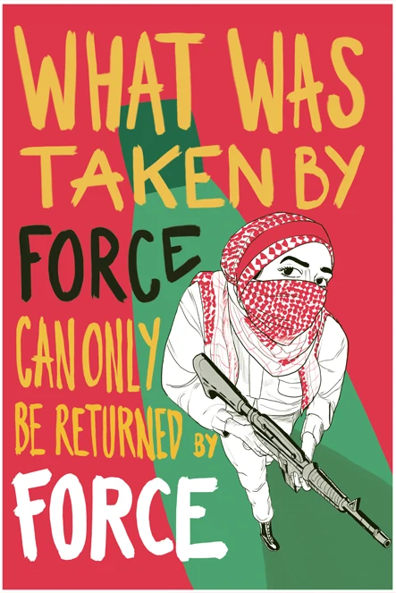
L’immagine adotta un registro visivo radicalmente diverso rispetto a quello della vittima: qui domina la rivendicazione identitaria armata, potenziata dalla presenza di una figura femminile. La donna non è rappresentata come madre, martire o oggetto da proteggere (stereotipi comuni nelle rappresentazioni belliche), ma come soggetto d’azione. Il suo volto è coperto, ma il corpo è pronto. L’arma è integrata nella postura, non simbolo di difesa ma prolungamento dell’intenzione.
Dal punto di vista psicologico, questa immagine opera un rovesciamento dei ruoli tradizionali: la donna non è testimone passiva né figura da salvare, ma colei che rivendica la restituzione del torto subito. Si costruisce così un nuovo archetipo femminile, militante e determinato, che si offre come identità possibile per soggetti esclusi dalle narrazioni dominanti del conflitto.
La frase “what was taken by force...” crea una struttura circolare e chiusa: solo la forza può bilanciare la forza. Non c’è spazio per mediazioni né per il dialogo: il messaggio è rivolto a un pubblico interno, già schierato. È una forma di propaganda auto-radicalizzante, che, come spiegato da Ellul (2023), non mira solo a convincere, ma a costruire l’identità del propagandato attraverso la ripetizione e l’emozione.
La forza della composizione risiede nell’uso strategico del codice cromatico, che costruisce una narrazione basata su contrasti simbolici. Il rosso acceso richiama il sangue, l’urgenza e l’allarme. Il nero compare esclusivamente nella scritta del primo “FORCE” (what was taken by force): un richiamo alla forza imposta, alla violenza subita, ma anche al martirio e al lutto che accompagna chi vive sotto occupazione. In contrasto, un secondo “FORCE” (can only be returned by force) appare in bianco: colore che rimanda alla purezza ed alla legittimità dell’azione. Questo secondo “FORCE”, cromaticamente allineato alla tuta militare indossata dalla combattente, sembra voler dichiarare che quella forza, al contrario della prima, è giusta, necessaria, rivendicativa. A completare la scena, una fascia verde attraversa diagonalmente l’immagine: non è un semplice sfondo, ma una sorta di strada simbolica su cui la figura avanza. Il verde, colore dell’Islam, aggiunge una dimensione religiosa al gesto, rafforzando il legame tra fede, identità collettiva e resistenza. In assenza di una bandiera esplicita, la propaganda si affida al linguaggio dei colori per suggerire un’appartenenza, coinvolgere lo spettatore e trasmettere una narrazione condivisa, potente ed implicita.
Questa immagine non cerca empatia né giustificazione: chiede spazio per agire, e lo fa attraverso una rappresentazione sorprendente, dove la forza non è solo militare ma simbolica, psicologica e culturale. La donna armata è il volto inaspettato della giustizia reclamata. Il suo gesto, accompagnato da un messaggio verbale diretto, assume una funzione propagandistica precisa: legittimare l’azione armata come risposta identitaria e politica.
Bibliografia
Ellul, J. (2023). Propaganda. Piano B Edizioni. (Opera originale pubblicata nel 1962)
6. “ENOUGH IS ENOUGH!”: IL GRIDO DELL’ANZIANA E LA PERSONIFICAZIONE DELLA MEMORIA COLLETTIVA
In questa vignetta a colori realizzata nel 2003 da Carlos Latuff (illustratore politico brasiliano, noto per le sue vignette a sostegno della causa palestinese ed accusato da vari critici di antisemitismo), la scena è dominata da un contrasto forte: da un lato un’anziana donna palestinese, vestita di bianco con la bandiera palestinese sul petto e con uno slogan che recita “Hands off Al-Aqsa” (Giù le mani da Al-Aqsa); dall’altro, due soldati israeliani in uniforme, raffigurati in fuga, armati e visibilmente spaventati. Sullo sfondo, la figura femminile urla: “Enough of apartheid! Enough of ethnic cleansing! ENOUGH IS ENOUGH!” (Basta con l’apartheid! Basta con la pulizia etnica! Ora basta!). La scelta di rappresentare come soggetto attivo della resistenza un’anziana donna è significativa. Non solo rompe gli stereotipi della militanza armata, ma trasforma la figura femminile, generalmente associata alla cura o al lutto, in voce vivente della memoria storica. È la personificazione della Palestina stessa: vecchia, resistente, arrabbiata. Il suo grido non è individuale ma collettivo, ed il suo aspetto non è realistico ma simbolico: una metafora incarnata della continuità generazionale. Come mostrato negli studi di Bar-On (1996), le figure anziane agiscono spesso da vettori della testimonianza transgenerazionale, dando voce ai traumi irrisolti della collettività.
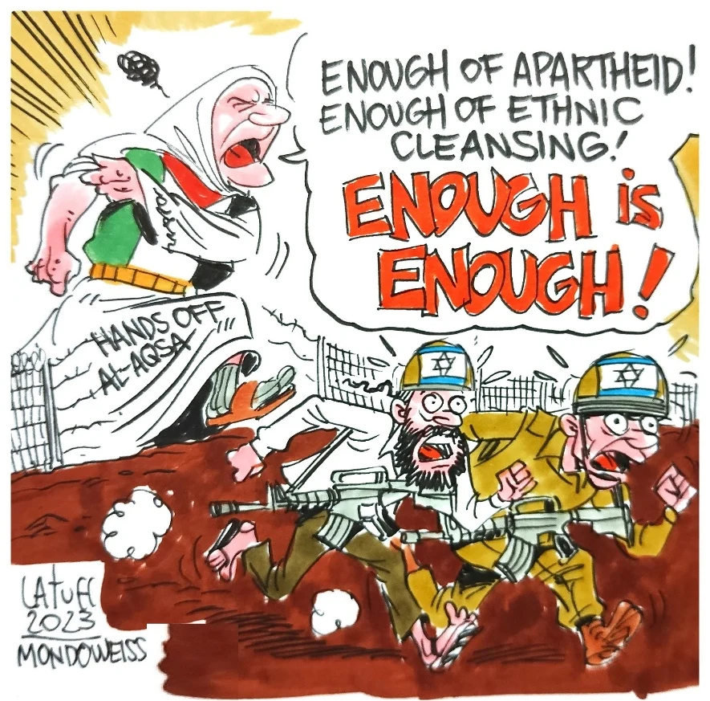
La postura dei soldati, giovani, armati eppure impauriti, inverte la relazione di potere: la forza militare fugge davanti alla fragilità che si ribella. Qui la propaganda non agisce più per allusione, ma in forma esplicita: il nemico è chiaramente identificato, con tanto di simbolo israeliano ben visibile sui caschi. Non c’è spazio per ambiguità. La donna non solo denuncia, ma accusa direttamente, nominando concetti pesanti e giuridicamente connotati: apartheid ed ethnic cleansing (pulizia etnica). Si tratta di etichette morali, prima ancora che politiche, che spostano il campo del discorso su un piano universale e giudicante, attraverso un meccanismo di costruzione del nemico che, come evidenziato da Bandura (2017), consente il disimpegno morale e la delegittimazione dell’avversario.
Dal punto di vista psicologico, l’uso di una figura anziana potenzia il senso di legittimità storica e di dolore accumulato. L’età avanzata evoca la continuità del trauma, l’esperienza di più generazioni, e rafforza l’idea che la sopportazione abbia raggiunto il limite. “Enough is enough” (Ora basta) non è solo uno slogan, ma una soglia psichica, una linea emotiva che segna la transizione dalla tolleranza alla reazione. Janoff-Bulman (1992) descrive questo meccanismo come rottura delle assunzioni fondamentali ed attivazione della giustizia riparativa: un processo che giustifica il passaggio dalla narrazione alla mobilitazione.
Dal punto di vista grafico, la scena è caotica, deformata, caricaturale: tipico del linguaggio satirico, che esaspera per colpire. Tuttavia, l’intento non è solo deridere, ma delegittimare visivamente il nemico e sacralizzare la rabbia dell’oppresso, anche quando viene da una figura apparentemente non minacciosa. Il corpo dell’anziana è rappresentato in modo volutamente sproporzionato, con un’altezza dominante rispetto ai soldati in fuga. Non appare fragile, ma imponente, caricaturale, come a voler incarnare la forza di un’intera memoria collettiva. Il gesto di tirarsi su le maniche è inequivocabile: indica la volontà di passare all’azione, di affrontare direttamente l’aggressore. Come osserva Sontag (2021), l’immagine della vittima attiva ha un impatto retorico superiore, proprio perché scardina la dicotomia tra debolezza e potere.
Questa immagine punta su un elemento chiave: la discrepanza tra potere militare e forza morale. L’anziana non ha armi, ma combatte con il corpo, la voce, il gesto. È la personificazione di una rabbia collettiva che non si arrende. I soldati non fuggono da una minaccia fisica reale, ma da ciò che lei rappresenta: la resistenza di un popolo che ha memoria, voce e coraggio. Come evidenziava Ellul (2023), la propaganda efficace non crea la realtà: la amplifica, la struttura, la rende inevitabile agli occhi di chi osserva.
Bibliografia
Bandura, A. (2017). Disimpegno morale: Come facciamo del male continuando a vivere bene. Trento: Erickson.
Bar-On, D. (1996). Legacy of Silence: Encounters with Children of the Third Reich. Harvard University Press.
Ellul, J. (2023). Propaganda. Piano B Edizioni. (Opera originale pubblicata nel 1962)
Janoff-Bulman, R. (1992). Shattered Assumptions: Towards a New Psychology of Trauma. Free Press.
Sontag, S. (2021). Davanti al dolore degli altri. Nottetempo.
7. “STOP THE GENOCIDE”: PROPAGANDA VISIVA, DOLORE PUBBLICO E DIFESA DELL’UMANITÀ
Le due immagini analizzate in questa scheda condividono lo stesso messaggio diretto e accusatorio: “Stop the Genocide” (Fermate il genocidio). Entrambe le rappresentazioni appartengono al registro emotivo più intenso della propaganda visiva, puntando non sull’attacco ma sulla difesa dell’umano, attraverso l’esposizione del dolore, della sofferenza e della dignità negata. Tuttavia, lo fanno con linguaggi differenti: la prima con una grafica vettoriale minimalista, la seconda con un’impostazione pittorica iperemotiva.
Nella prima immagine, una donna velata è inquadrata frontalmente su sfondo rosso: lo sguardo è diretto, il volto calmo, ma intenso. La kefiah e l’hijab, nei toni del bianco, nero e verde, richiamano immediatamente l’identità palestinese. Il messaggio verbale, “Stop the Genocide – We are not the enemy” (Fermate il genocidio – Non siamo il nemico), agisce su due livelli. Da un lato, denuncia una violenza sistemica; dall’altro, chiede di essere riconosciuti come esseri umani e non come soggetti minacciosi. L’enfasi non è sull’attacco ma sull’ingiustizia della percezione. È una propaganda che agisce per de-costruzione dello stereotipo, facendo appello all’identificazione empatica dello spettatore. A differenza di molte rappresentazioni aggressive o militanti, qui il volto è femminile, fermo, dignitoso: non chiede vendetta, ma riconoscimento. Questo tipo di immagine si inserisce in una retorica visuale simile a quella descritta da Sontag (2021), dove il volto della vittima, se esposto frontalmente e senza retorica, assume un potere morale che supera le parole. L’accusa di genocidio è diretta, ma accompagnata da una strategia visiva di umanizzazione, non di demonizzazione.
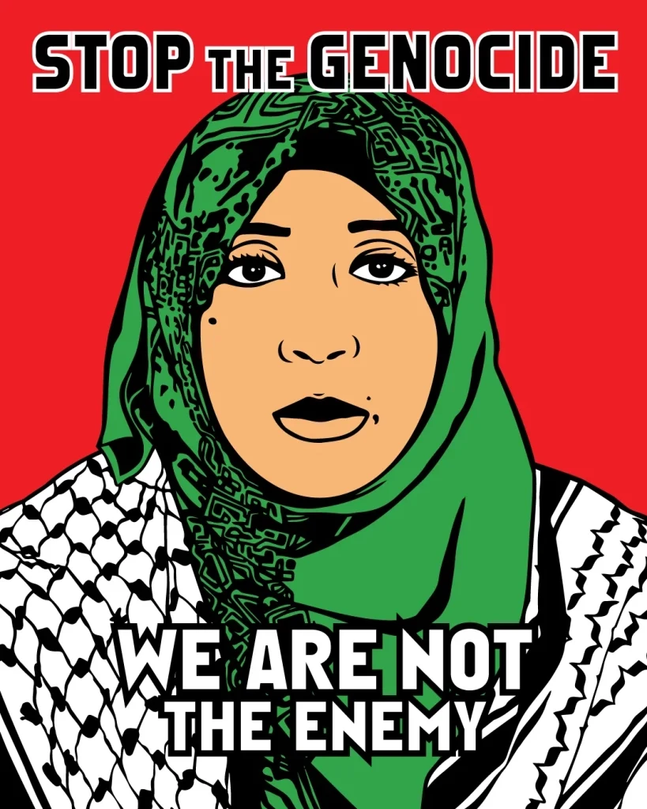
La seconda immagine, invece, lavora su una narrazione visiva complessa, stratificata e commovente. La scena è una sorta di collage emotivo: bambini feriti, corpi senza vita, volti piangenti, un paramedico che stringe tra le braccia un bambino privo di sensi.
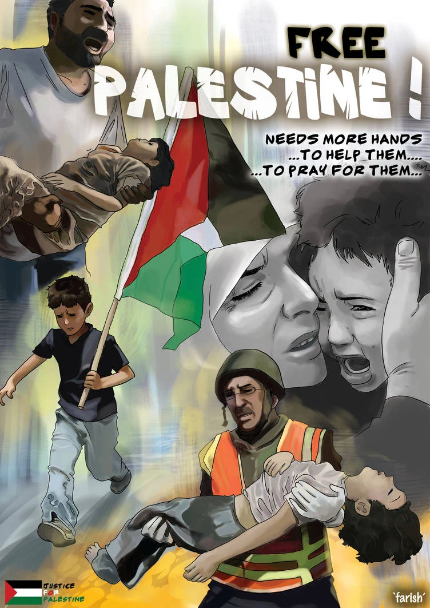
La bandiera palestinese è sorretta da un bambino che corre: non è un semplice sfondo decorativo, ma un elemento identitario che attraversa e collega le diverse scene di sofferenza presenti nell’immagine. La sua presenza conferisce contesto politico e simbolico al dolore rappresentato, trasformando le singole storie in un racconto collettivo di appartenenza, resistenza e denuncia. Non si tratta di un attacco a combattenti, ma all’umanità stessa, colpita nella sua parte più vulnerabile e incapace di difendersi. In alto a destra, la scritta “Free Palestine! Needs more hands… to help them… to pray for them…” (Palestina libera! Servono più mani… per aiutarli… per pregare per loro…) si rivolge direttamente allo spettatore, coinvolgendolo in una responsabilità morale e spirituale.
L’effetto di questa immagine è immersivo e accusatorio allo stesso tempo. Ogni scena è studiata per generare una risposta emotiva immediata: il dolore di un padre, le lacrime di una madre, l’impotenza di un bambino che corre. È una strategia comunicativa già descritta da Janoff-Bulman (1992) quando parla della “rottura delle assunzioni morali fondamentali” causata dall’esposizione visiva alla sofferenza ingiustificabile: l’osservatore si trova di fronte ad una realtà che non può spiegare, e dunque sente il bisogno di agire o di schierarsi.
A differenza della prima immagine, dove il messaggio è più contenuto e razionale, qui l’impatto è sensoriale ed esplicitamente drammatico. Il fine propagandistico non è solo la denuncia ma la mobilitazione emotiva, il richiamo all’azione, anche solo attraverso il pensiero, la preghiera o la solidarietà. Il linguaggio visivo è più cinematografico, vicino al fotorealismo emotivo, e usa il trauma infantile come leva principale di persuasione.
Dal punto di vista psicologico, entrambe le immagini fanno uso del meccanismo identificativo descritto da Bandura (2017): la deumanizzazione dell’altro viene qui contrastata dalla riumanizzazione del sé collettivo palestinese, rappresentato in forma femminile e infantile, come corpo innocente e ingiustamente violato. Entrambe le immagini mirano a produrre un effetto di frattura cognitiva: una tensione tra ciò che si vede e ciò che si crede o si è stati portati a credere. La figura della donna che afferma “Non siamo il nemico” è una sfida diretta alla costruzione del frame culturale dominante. I corpi dei bambini nelle braccia degli adulti pongono una domanda muta ma implacabile: che colpa ha questo volto?
In conclusione, pur con stili e intensità differenti, le due immagini operano su un terreno comune: quello della propaganda empatica, costruita non per alimentare odio ma per ricostruire la percezione dell’umanità negata. Una strategia psicologica raffinata, dove la vittima parla, non per implorare pietà, ma per restituire una verità che passa attraverso lo sguardo.
A questo punto emerge una domanda inevitabile: perché usare la parola “genocidio”, pur sapendo di non raccogliere un vero consenso occidentale, ma solo l’appoggio di alcune organizzazioni umanitarie, accademiche o politicamente sensibili? La scelta non è solo terminologica, ma profondamente simbolica.
Il termine “genocidio” è storicamente e culturalmente legato alla Shoah, che ne rappresenta la tragica matrice simbolica e giuridica. La parola stessa fu coniata da Raphael Lemkin nel 1944 proprio in riferimento allo sterminio degli ebrei d’Europa, e da allora l’esperienza della Shoah ha costituito il modello centrale a partire dal quale il concetto è stato definito nel diritto internazionale (Convenzione ONU del 1948). All’interno di molte comunità ebraiche, esiste una forte consapevolezza e in alcuni casi una protezione identitaria di quel termine, che viene percepito come profondamente legato alla memoria collettiva ed alla specificità dell’Olocausto. In questo senso, l’uso del termine “genocidio” in altri contesti, come quello palestinese, può essere percepito da alcuni come una “appropriazione semantica”, in grado di generare attrito, perché vissuta come una relativizzazione o una sovrapposizione narrativa con la memoria della Shoah. Inoltre, crea dissonanza cognitiva (Festinger, 1957): “Come posso essere io autore di un genocidio, dopo averlo subito?”
Tuttavia, dal punto di vista giuridico e accademico, il termine genocidio non è esclusivo dell’Olocausto: è stato applicato ad altri casi storici, come il Ruanda, la Bosnia ed il genocidio armeno, ed oggi viene rivendicato nel contesto palestinese da attivisti, giuristi e ONG, con l’intento di denunciare atti percepiti come sistematici, deliberati e distruttivi verso un gruppo umano identificabile.
L’utilizzo del termine “genocidio”, allora, non è solo una denuncia estrema, ma una strategia linguistica potente: sposta la narrazione dal piano geopolitico a quello morale assoluto. Pur consapevoli della resistenza simbolica che il termine incontra, i suoi promotori scelgono di usarlo per innalzare il livello dell'accusa e portare il discorso nel campo della responsabilità storica, non solo militare o politica. Si tratta di un uso consapevole ed intenzionale, che mira a generare indignazione e senso di urgenza, pur sapendo che difficilmente potrà penetrare nei canali istituzionali mainstream.
La risposta risiede nella logica della propaganda non mainstream, che non mira tanto a influenzare governi o grandi testate, quanto a mobilitare le masse dal basso. Come spiega Ellul (2023), la propaganda moderna non si limita a veicolare contenuti: agisce sul terreno emotivo, generando disposizioni psicologiche favorevoli all’azione collettiva. In altre parole, il bersaglio non è l’informazione, ma l’indignazione. Ma proprio per questo, le immagini e le parole si rivolgono ad un altro pubblico: quello dei movimenti, delle piazze, degli studenti, degli attivisti, delle associazioni civili che possono trasformare l’emozione in azione. È la logica dei “movement entrepreneurs” (imprenditori del movimento), ovvero attori strategici che sanno utilizzare risorse, simboli e narrazioni per generare rottura narrativa e mobilitazione diffusa (McCarthy & Zald, 1977).
Bibliografia
Bandura, A. (2017). Disimpegno morale: Come facciamo del male continuando a vivere bene. Erickson.
Ellul, J. (2023). Propaganda. Piano B Edizioni. (Opera originale pubblicata nel 1962).
Festinger, L. (1957). A theory of cognitive dissonance. Stanford University Press.
Janoff-Bulman, R. (1992). Shattered Assumptions: Towards a New Psychology of Trauma. Free Press.
McCarthy, J. D., & Zald, M. N. (1977). Resource Mobilization and Social Movements: A Partial Theory. American Journal of Sociology, 82(6), 1212–1241. https://doi.org/10.1086/226464
Sontag, S. (2021). Davanti al dolore degli altri. Nottetempo.
8. FUOCO E INNOCENZA: la costruzione simbolica del nemico (propaganda iraniana)
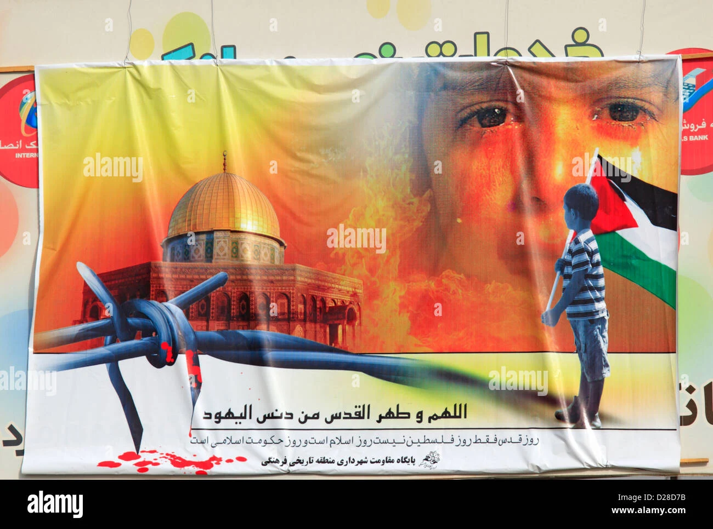
L’immagine mostra un manifesto apparso in Iran, in cui si fondono tre elementi fondamentali della retorica visiva pro-Palestinese: la sacralità della moschea di Al-Aqsa, la sofferenza infantile ed il sangue come testimonianza. Al centro della scena si erge la Cupola della Roccia, simbolo di Gerusalemme e dell’identità islamica, incorniciata da un cielo rosso che sfuma in fiamme e calore. A sinistra, un filo spinato nodoso, intriso di sangue, penetra l’inquadratura come ferita aperta. A destra, il volto di un bambino in lacrime (ingrandito, quasi sovradimensionato rispetto al resto) emerge dalle fiamme, mentre un altro bambino, più piccolo e ripreso di spalle, tiene in mano una bandiera palestinese e osserva quella scena. La relazione visiva tra i due bambini è centrale: uno è simbolo del trauma, l’altro dell’eredità.
Dal punto di vista semiotico e psicologico, l'immagine opera attraverso la logica della sovrapposizione simbolica. Il dolore individuale, rappresentato dalle lacrime e dallo sguardo del bambino in primo piano, viene assorbito e ridefinito come trauma collettivo, associato alla perdita territoriale e spirituale. Non si tratta più del pianto di un bambino, ma della sofferenza dell’umma islamica tutta, condensata nello sguardo. Il secondo bambino, rivolto verso la scena, funge da spettatore interno all’immagine, raddoppiando il ruolo dell’osservatore esterno. In questo meccanismo speculare, chi guarda il manifesto è indotto a identificarsi con il bambino piccolo, innocente e partecipe, in un processo di immedesimazione visiva riconducibile ai meccanismi empatici e identificativi descritti da Bandura (2017) nella sua analisi del disimpegno morale e della comunicazione persuasiva.
L’uso dei colori è eloquente: il rosso dominante non solo richiama il fuoco e il sangue, ma definisce un campo affettivo di urgenza e allarme. È un colore che attiva nel cervello una risposta di vigilanza e difesa (Palmer et al., 2013). Il contrasto con la pelle chiara e il vestito pulito del bambino con la bandiera crea uno stacco narrativo: la purezza osserva la devastazione, come se stesse per ereditarla. Il filo spinato in primo piano, raffigurato in un azzurro metallico, appare quasi innaturale: non ha una funzione realistica, ma agisce come soglia ideologica. Il sangue alla sua base è fresco, recente, vivo. La ferita non è storica, ma attuale. Il filo spinato non è solo un ostacolo: è un trauma.
Dal punto di vista iconografico, è importante notare che la struttura al centro dell’immagine è la Cupola della Roccia (Qubbat as-Sakhra), facilmente riconoscibile per la sua cupola dorata. Essa si trova nello stesso complesso della moschea di Al-Aqsa ma non coincide con essa: la Cupola è un santuario islamico costruito nel VII secolo, mentre Al-Aqsa è una vera e propria moschea con cupola argentata. Tuttavia, nella propaganda visiva, la Cupola della Roccia viene spesso usata per rappresentare l’intero complesso sacro di Gerusalemme, inclusa Al-Aqsa, per la sua forza simbolica e riconoscibilità immediata. Anche in questa immagine, il riferimento è quindi più ampio: la difesa di un luogo sacro che simboleggia l’identità islamica nel suo insieme.
Dal punto di vista linguistico, la frase collocata in basso non è scritta in farsi, ma in arabo. Questo dato non è marginale: in Iran, l’uso dell’arabo nei manifesti di propaganda non è raro, soprattutto quando si vuole rafforzare il richiamo pan-islamico o inserire il messaggio in un contesto religioso condiviso a livello transnazionale. L’arabo, infatti, è la lingua del Corano e viene spesso impiegato per esprimere un’appartenenza spirituale che travalica i confini nazionali. In questo caso, l’uso della lingua araba suggerisce che il messaggio non è destinato solo al pubblico iraniano, ma anche, forse soprattutto, ad una platea internazionale islamica, che possa riconoscere immediatamente la sacralità del lessico e la legittimità del contenuto. La frase, tradotta, recita: “O Allah, purifica Gerusalemme dalla profanazione degli ebrei”. Una dichiarazione esplicita, teologicamente connotata, che introduce una dimensione sacrale ed allo stesso tempo polemica. Non si fa riferimento a Israele come Stato, ma si utilizza una generalizzazione identitaria (“gli ebrei”) che può alimentare dinamiche di odio. In questa direzione, il messaggio si distanzia dalla propaganda puramente empatica e si avvicina ad una forma di identificazione moralmente e religiosamente polarizzata.
È ciò che Sontag (2021) definisce il rischio della “rappresentazione orientata alla colpa”, in cui l'immagine del dolore serve a costruire un nemico più che a comprendere il dolore stesso.
L’elemento più interessante, tuttavia, resta la relazione visiva tra i due bambini. Essa crea una tensione narrativa tra passato e futuro, trauma e testimonianza. Il bambino che piange non guarda il pubblico, ma lo attraversa con lo sguardo, mentre quello con la bandiera è posizionato in modo da farci assumere il suo punto di vista. È questa strategia che trasforma l’immagine in propaganda efficace: non convince con l’argomentazione, ma con la posizione. L’osservatore non è chiamato a pensare, ma a vedere e a sentire. È in questa dinamica che si inserisce anche la costruzione ideologica del nemico: assente come figura, presente come effetto.
L’immagine, infine, è un invito non esplicito all’azione, ma ad una presa di posizione. Chi guarda è reso partecipe, moralmente interpellato, psicologicamente provocato: attraverso il linguaggio del dolore, del sacro e dell’identità.
Bibliografia
Bandura, A. (2017). Disimpegno morale: Come facciamo del male continuando a vivere bene. Erickson.
Palmer, S. E., Schloss, K. B., & Sammartino, J. (2013). Visual aesthetics and human preference. Annual Review of Psychology, 64, 77–107. https://doi.org/10.1146/annurev-psych-120710-100504
Sontag, S. (2021). Davanti al dolore degli altri. Nottetempo.
9. “WE ARE NOT...”: la propaganda dell’innocenza tra Israele e Gaza
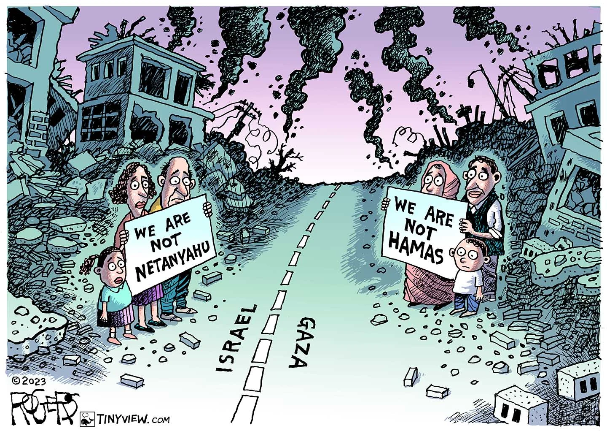
Questa vignetta satirica rompe lo schema binario del conflitto tra due poteri contrapposti (Israele e Hamas) per riportare il discorso su un piano più umano, più difficile da ignorare: quello della popolazione civile. Su uno sfondo devastato da bombe e macerie, due famiglie si fronteggiano, separate da una linea tratteggiata che divide il campo di battaglia in due territori: “Israel” da un lato, “Gaza” dall’altro. I volti sono attoniti, spaventati, segnati. Nessuno dei presenti brandisce armi o urla slogan: ciascun gruppo tiene un cartello. A sinistra, la scritta: “We are not Netanyahu” (“Non siamo Netanyahu”); a destra: “We are not Hamas” (“Non siamo Hamas”).
Il messaggio è tanto semplice quanto potente. Non si tratta di una negazione astratta, ma di una dichiarazione di identità esclusa, o forse strappata. È come se queste famiglie cercassero disperatamente di ricordare al mondo che esistono persone oltre i governi, oltre i leader, oltre i gruppi armati. E nel farlo, invocano una sospensione del giudizio collettivo: la richiesta non è solo di non essere colpiti fisicamente, ma di non essere assimilati alla logica del nemico.
Dal punto di vista psicologico, la vignetta utilizza una strategia comunicativa che si fonda sul principio dell’individuazione empatica (Batson, 2011): rappresentare individui ordinari, riconoscibili, smarriti, per attivare nel lettore un senso di somiglianza, prossimità e immedesimazione. Non ci sono bandiere, né simboli religiosi o militari. Solo persone. È un uso mirato della propaganda “depersonalizzante al contrario”: invece di ridurre il nemico ad un simbolo, qui si cerca di ridurre i simboli alla loro distanza rispetto alle persone reali.
La presenza dei bambini, in entrambe le famiglie, rafforza questa operazione. Come già spiegato in diverse teorie di comunicazione visiva in ambito bellico, il corpo infantile rappresenta la forma più immediata di vittima (Sontag, 2021): non solo perché indifeso, ma perché culturalmente caricato di innocenza e speranza. Mettere bambini tra le macerie è un appello visivo alla coscienza collettiva. Farli parlare attraverso la negazione (“non siamo…”), significa riconoscere loro un’identità che rischia altrimenti di essere inghiottita dalla retorica della guerra.
Ma perché scegliere questa forma di comunicazione, così antieroica, così apparentemente priva di forza retorica rispetto alla propaganda più aggressiva? Perché mostrare l’innocenza invece che il sacrificio? Una possibile risposta risiede nella stanchezza mediatica. Nell’epoca della saturazione narrativa, dove ogni notizia è accompagnata da immagini forti, il messaggio che resiste è spesso quello che sussurra, quello che non grida. La rappresentazione dell’innocenza diventa quindi una forma di resistenza simbolica: l’unica in grado di bucare il rumore.
Questa vignetta si inserisce nella tradizione della “propaganda negativa” di secondo livello (Ellul, 2023): non più orientata a demonizzare l’altro, ma a separare le vittime dalle loro presunte rappresentazioni politiche. È la denuncia di un’associazione indebita. Le famiglie non stanno chiedendo alle armi di fermarsi, ma al mondo di guardarli come esseri umani, e non come portavoce di Netanyahu o di Hamas.
In conclusione, questa immagine non è solo un atto artistico. È un atto politico nel senso più profondo del termine: tenta di ridefinire chi ha diritto di parola nel conflitto, chi può essere visto, e chi non deve essere giudicato e dimenticato.
Bibliografia
Batson, C. D. (2011). Altruism in Humans. Oxford University Press.
Ellul, J. (2023). Propaganda. Piano B Edizioni. (Opera originale pubblicata nel 1962)
Sontag, S. (2021). Davanti al dolore degli altri. Nottetempo.
CONCLUSIONI
LA PROPAGANDA COME SPECCHIO DISTORTO
Leggere la propaganda non significa scegliere da che parte stare, ma imparare a disinnescare i meccanismi che decidono in nostra vece. Ogni immagine analizzata in questo lavoro ha mostrato un intento comune: orientare lo sguardo, semplificare il conflitto, affondare le ambiguità nel bianco e nero di una narrazione totalizzante. È proprio in questa semplificazione estrema che si cela il potere della propaganda: non ci chiede di pensare, ci chiede di reagire.
Attraverso la ripetizione visiva, la retorica affettiva, la disumanizzazione del nemico e la sacralizzazione della causa, la propaganda contemporanea (anche quella veicolata sui social) agisce come un frame invisibile che struttura ciò che appare naturale. Come osserva Goffman (1974) ed ampiamente descritto nell’analisi delle immagini, i frame cognitivi non si impongono con la forza, ma si interiorizzano come regole implicite del vedere e del sentire. Ed è proprio questa normalizzazione del punto di vista che rende necessario un esercizio attivo di decostruzione.
In questo senso, l’analisi delle immagini non è un atto neutro: è un gesto di resistenza epistemica. Smontare le logiche della manipolazione visiva significa riappropriarsi di uno spazio critico, in cui il dissenso non è più un errore da censurare, ma una lente per cogliere la complessità. Le immagini che sembrano parlare da sole, in realtà parlano per conto di qualcuno. Non esistono immagini innocenti, soprattutto in tempo di guerra. Ogni condivisione è, volenti o nolenti, una scelta narrativa.